<!DOCTYPE html>
<html lang="ja">
<head>
<meta name="robots" content="noindex,nofollow">
<meta charset="UTF-8">
<meta name="viewport" content="width=device-width, initial-scale=1.0">
<title>MINERTIA ストーリー設定サイト</title>
<style>
  :root{
    --bg:#1c1b18; --panel:#26241f; --ink:#e6e0d2; --sub:#a29b8b;
    --line:#3d3a31; --accent:#d4a95c; --accent2:#8fb3d4;
    --k-bg:#213020; --k-ink:#9ed49a; --k-line:#3d5c39;
    --t-bg:#382e17; --t-ink:#e6c77e; --t-line:#5d4b25;
    --c-bg:#1e2936; --c-ink:#9cc0e8; --c-line:#34485f;
    --warn:#e07d74;
  }
  *{box-sizing:border-box;margin:0;padding:0}
  body{background:var(--bg);color:var(--ink);font-family:"Hiragino Kaku Gothic ProN","Yu Gothic UI","Meiryo",sans-serif;line-height:1.85;font-size:15px}
  a{color:var(--accent2)}
  /* layout */
  #app{display:flex;min-height:100vh}
  nav{width:250px;flex:none;background:#2e2b25;color:#d8d2c4;padding:18px 0 40px;position:sticky;top:0;height:100vh;overflow-y:auto}
  nav .brand{padding:0 18px 14px;border-bottom:1px solid #46423a;margin-bottom:10px}
  nav .brand h1{font-size:17px;color:#f0ead9;letter-spacing:.12em}
  nav .brand small{color:#9a9385;font-size:11px}
  nav .grp{padding:12px 18px 4px;font-size:11px;color:#93917e;letter-spacing:.15em}
  nav button.nv{display:flex;justify-content:space-between;align-items:center;width:100%;text-align:left;padding:7px 18px;background:none;border:none;color:#d8d2c4;font-size:13.5px;cursor:pointer;font-family:inherit}
  nav button.nv:hover{background:#3a362e}
  nav button.nv.on{background:#4a4438;color:#ffe9b8}
  nav .cnt{font-size:10.5px;background:var(--c-ink);color:#fff;border-radius:9px;padding:0 6px}
  main{flex:1;min-width:0;padding:30px 44px 90px;max-width:980px}
  /* topbar */
  #top{display:flex;gap:8px;align-items:center;flex-wrap:wrap;margin-bottom:22px}
  #top .flt{border:1px solid var(--line);background:var(--panel);border-radius:16px;padding:3px 13px;font-size:12.5px;cursor:pointer;color:var(--sub);font-family:inherit}
  #top .flt.on{background:var(--ink);color:#1c1b18;border-color:var(--ink)}
  #top .exp{margin-left:auto;border:none;background:var(--accent);color:#1c1b18;border-radius:16px;padding:5px 15px;font-size:12.5px;cursor:pointer;font-family:inherit;font-weight:600}
  .mode{font-size:11.5px;padding:3px 12px;border-radius:14px;white-space:nowrap}
  .mode.on{background:var(--k-bg);color:var(--k-ink);border:1px solid var(--k-line)}
  .mode.off{background:var(--t-bg);color:var(--t-ink);border:1px solid var(--t-line)}
  .mode.ro{background:var(--c-bg);color:var(--c-ink);border:1px solid var(--c-line)}
  /* dialogue mock (smartphone) */
  .dlg-wrap{display:flex;gap:18px;align-items:flex-start;flex-wrap:wrap}
  .dlg-btns{display:flex;flex-direction:column;gap:6px;min-width:150px}
  .dlg-btns button{border:1px solid var(--line);background:#2a2823;color:var(--ink);border-radius:8px;padding:5px 10px;font-size:12px;cursor:pointer;text-align:left;font-family:inherit}
  .dlg-btns button.on{background:var(--ink);color:#1c1b18;border-color:var(--ink)}
  .phone{position:relative;width:300px;height:600px;border-radius:26px;border:10px solid #1c1b19;background:linear-gradient(180deg,#3a4148 0%,#23282e 55%,#15181c 100%);overflow:hidden;cursor:pointer;flex:none;box-shadow:0 8px 24px rgba(0,0,0,.25)}
  .dlg-char{position:absolute;bottom:118px;left:50%;transform:translateX(-50%);height:62%;max-width:none;image-rendering:auto;filter:drop-shadow(0 6px 10px rgba(0,0,0,.35));transition:opacity .15s}
  .dlg-box{position:absolute;left:10px;right:10px;bottom:12px;background:rgba(12,14,18,.82);border:1px solid rgba(255,255,255,.18);border-radius:12px;padding:10px 14px 16px;min-height:96px;color:#f2efe6}
  .dlg-name{display:inline-block;font-size:11px;padding:1px 10px;border-radius:9px;margin-bottom:6px;color:#fff}
  .dlg-text{font-size:13.5px;line-height:1.75}
  .dlg-adv{position:absolute;right:10px;bottom:6px;font-size:10px;color:#cfc9b8;animation:dlgblink 1s infinite}
  @keyframes dlgblink{0%,100%{opacity:1}50%{opacity:.2}}
  .dlg-narr{position:absolute;left:24px;right:24px;top:40%;transform:translateY(-50%);color:#e8e4d8;font-size:13.5px;line-height:2.1;text-align:center}
  .dlg-sys{position:absolute;left:20px;right:20px;top:14px;color:#b9b3a2;font-size:11px;text-align:center;font-style:italic}
  .dlg-choices{position:absolute;left:30px;right:30px;bottom:130px;display:flex;flex-direction:column;gap:8px}
  .dlg-choices button{background:rgba(240,236,224,.95);color:#2b2a26;border:2px solid #2b2a26;border-radius:10px;padding:8px 10px;font-size:13px;cursor:pointer;font-family:inherit}
  .dlg-choices button:hover{background:#fff}
  .dlg-cap{position:absolute;top:8px;left:12px;font-size:10px;color:#8f8a7c}
  /* page header */
  .phead{margin-bottom:20px;border-bottom:2px solid var(--line);padding-bottom:12px}
  .phead h2{font-size:24px;letter-spacing:.05em}
  .phead p{color:var(--sub);font-size:13px;margin-top:4px}
  /* section card */
  .sec{background:var(--panel);border:1px solid var(--line);border-radius:10px;margin-bottom:18px;overflow:hidden}
  .sec.hide{display:none}
  .shead{display:flex;align-items:center;gap:10px;padding:12px 18px;border-bottom:1px solid var(--line);background:#2d2a24}
  .shead h3{font-size:15.5px;flex:1}
  .badge{font-size:11px;padding:2px 10px;border-radius:10px;white-space:nowrap;border:1px solid}
  .b-k{background:var(--k-bg);color:var(--k-ink);border-color:var(--k-line)}
  .b-t{background:var(--t-bg);color:var(--t-ink);border-color:var(--t-line)}
  .sbody{padding:16px 20px}
  .sbody p{margin:0 0 10px}
  .sbody p:last-child{margin-bottom:0}
  .sbody ul,.sbody ol{margin:0 0 10px 22px}
  .sbody li{margin-bottom:3px}
  .sbody h4{font-size:13.5px;color:var(--accent);margin:14px 0 6px;letter-spacing:.05em}
  .sbody table{border-collapse:collapse;width:100%;font-size:13px;margin:8px 0}
  .sbody th,.sbody td{border:1px solid var(--line);padding:6px 10px;text-align:left;vertical-align:top}
  .sbody th{background:#333028;font-weight:600}
  .sbody blockquote{border-left:3px solid var(--accent);background:#2f2c24;padding:8px 14px;margin:8px 0;border-radius:0 6px 6px 0;color:#d9d1bd}
  .line{font-size:14px}
  .note{font-size:12.5px;color:var(--sub)}
  .kw{color:var(--accent);font-weight:600}
  .ng{color:var(--warn);font-weight:600}
  /* image slot */
  .imgslot{width:180px;height:220px;border:2px dashed var(--line);border-radius:10px;display:flex;align-items:center;justify-content:center;text-align:center;color:var(--sub);font-size:11.5px;float:right;margin:0 0 12px 18px;background:#23211c;overflow:hidden}
  .imgslot img{width:100%;height:100%;object-fit:cover;display:block}
  /* feedback zone */
  .fzone{border-top:1px dashed var(--line);background:#22242a;padding:10px 18px}
  .fzone .rrow{display:flex;gap:8px;align-items:center;flex-wrap:wrap}
  .rbtn{border:1px solid var(--c-line);background:#262b33;border-radius:14px;padding:2px 12px;font-size:12px;cursor:pointer;color:var(--c-ink);font-family:inherit}
  .rbtn.on-ok{background:#2f6b33;color:#fff;border-color:#2f6b33}
  .rbtn.on-ng{background:#a94442;color:#fff;border-color:#a94442}
  .cbtn{border:none;background:none;color:var(--c-ink);font-size:12px;cursor:pointer;margin-left:auto;font-family:inherit}
  .clist{margin-top:8px}
  .citem{background:var(--c-bg);border:1px solid var(--c-line);border-radius:8px;padding:8px 12px;margin-bottom:6px;font-size:13px}
  .citem .meta{font-size:10.5px;color:var(--c-ink);display:flex;justify-content:space-between;margin-bottom:2px}
  .citem .del{cursor:pointer;color:var(--warn);background:none;border:none;font-size:10.5px;font-family:inherit}
  .cform{display:none;margin-top:8px}
  .cform.open{display:block}
  .cform textarea{width:100%;min-height:64px;border:1px solid var(--c-line);border-radius:8px;padding:8px 10px;font-family:inherit;font-size:13px;resize:vertical;background:#20242b;color:var(--ink)}
  .cform .save{margin-top:6px;border:none;background:var(--c-ink);color:#fff;border-radius:14px;padding:4px 16px;font-size:12px;cursor:pointer;font-family:inherit}
  /* legend chips */
  .legend{display:flex;gap:10px;flex-wrap:wrap;margin:10px 0}
  .legend .lg{display:flex;align-items:center;gap:6px;font-size:12.5px;color:var(--sub)}
  .dot{width:12px;height:12px;border-radius:3px;display:inline-block}
  /* feedback page */
  .fb-sec{background:var(--panel);border:1px solid var(--line);border-radius:10px;padding:14px 18px;margin-bottom:12px}
  .fb-sec .to{font-size:11px;color:var(--sub)}
  .empty{color:var(--sub);text-align:center;padding:40px 0}
</style>
</head>
<body>
<div id="app">
  <nav id="nav"></nav>
  <main>
    <div id="top"></div>
    <div id="page"></div>
  </main>
</div>

<script>
/* =========================================================
   MINERTIA ストーリー設定サイト
   - 情報3タイプ: 確定(仮)=b-k / 提案=b-t / コメント(あなたの入力)
   - コメント・リアクションは localStorage に保存(このブラウザ内)
   - 「フィードバック書き出し」でMarkdown化 → Claudeに貼り付けて反映依頼
   ========================================================= */

/* ---------- tutorial dialogues (ID01-11) ---------- */
const DLG_CHARS={
 naeka:{name:'なえか',img:'images/naeka.png',color:'#2e7f8f'},
 kosuke:{name:'コウスケ',img:'images/kosuke.png',color:'#6f7a4e'},
 gen:{name:'げん',img:'images/gen.png',color:'#c07a1d'},
};
const DLGS=[
 {id:'ID01',title:'ID01 導入(仮)',bg:'#0a0b0e',note:'2026-07-07コメント反映:<b>短く、ベクトルの話を端的に</b>。文言は最終確定前の仮。',lines:[
  {narr:'(真っ暗な画面に、静かに文字が浮かぶ)'},
  {narr:'すべての動きは、ベクトルでできている。'},
  {narr:'岩も、風も、道具のひと振りも。'},
  {narr:'そして宝石だけが、釣り合ったまま――消えずに残る。'},
 ]},
 {id:'ID02',title:'ID02 話のはじまり',note:'2026-07-07コメント反映:短縮/<b>選択肢廃止</b>/<b>鍛冶屋の自己紹介を冒頭に</b>/<b>最初の道具はなえかから手渡し</b>(実装:step1000の入手演出を「受け取る」に差し替え検討)。わるだくみっぽさは「山分け」で維持。',lines:[
  {sys:'(鉱山。坑道の入り口)'},
  {c:'naeka',t:'あたし、なえか。鍛冶屋やってます。……よろしくね!'},
  {c:'naeka',t:'ブルーダイヤモンド、このあたりでとれるって、げんが言ってたの。'},
  {c:'naeka',t:'はい、これ。あたしが打ったピッケル。……見つけたら、山分けね。'},
  {sys:'(ピッケルを受け取る → 岩をタップで採掘開始 / step1000)'},
 ]},
 {id:'ID03',title:'ID03 掘ってみよう',note:'短く(絵コンテ指定)。この後の装備説明ポップアップ(step2000〜4000)は既存のまま。',lines:[
  {c:'naeka',t:'あ、そうだ。持ってるアイテム、使ってみ?'},
  {c:'naeka',t:'道具は装備してこそだよ。ほら、そこの道具箱から。'},
  {sys:'(装備画面へ誘導 → 既存の装備説明はそのまま)'},
 ]},
 {id:'ID04',title:'ID04 自動で働くアイテム',note:'2026-07-07コメント反映:<b>「道具ってのはね〜」+「どんどん掘って」の2行だけに短縮</b>。理屈は語らず「張り切るの」で流す=世界の理は温存。',lines:[
  {sys:'(装備を終えて、坑道に戻る。ピッケルがひとりでに動き出す / step5000)'},
  {c:'naeka',t:'道具ってのはね、持ち主が決まると張り切るの。……うちで打った子は、特にね。'},
  {c:'naeka',t:'じゃ、どんどん掘ってこ!'},
 ]},
 {id:'ID05',title:'ID05 3-1を目指す',note:'レベル上げの後の会話。短かめ。メモ表現(「こりゃ〜ますわ」)をなえかの声に置換。Merge等の説明(step8000〜16200)は既存のまま。',lines:[
  {c:'naeka',t:'うんうん、いい調子。'},
  {c:'naeka',t:'その道具なら、もっと深くまでいける。……次は3-1、行ってみよっか。'},
 ]},
 {id:'ID06',title:'ID06 3-1おめでとう',note:'3-1到達イベント(新規実装)で発火。メモ表現(「やりぃぃぃ」)をなえかの声に置換。',lines:[
  {sys:'(3-1に到達)'},
  {c:'naeka',t:'おおーっ! 3-1、とうちゃーく!'},
  {c:'naeka',t:'はやいはやい。あんた、筋がいいよ。'},
 ]},
 {id:'ID07',title:'ID07 バトルの説明',note:'<b>げん初登場</b>。全発話短文ルール。選択肢なし。メモ表現(「youのその力でたのんだ」)を「力、貸せ」に置換。バトル説明ポップアップは既存のまま。',lines:[
  {sys:'(深部から、何かが這い出してくる)'},
  {c:'gen',t:'おい。'},
  {c:'gen',t:'出たぞ。……オニースだ。'},
  {c:'naeka',t:'うわっ、ほんとだ。掘ると出てくるんだよねえ、こいつら。'},
  {c:'gen',t:'放っとくと炭鉱が荒れる。……倒す。'},
  {c:'gen',t:'力、貸せ。'},
  {sys:'(バトル開始 → 既存のバトル説明はそのまま / step16500〜18000)'},
 ]},
 {id:'ID08',title:'ID08 次の目標 7-1',note:'バトル報酬説明(step20000)後。',lines:[
  {c:'naeka',t:'おつかれ! オニースの方は、げんがいるから大丈夫。'},
  {c:'naeka',t:'ほんじゃ、次は7-1まで!'},
 ]},
 {id:'ID09',title:'ID09 ほめる',note:'7-1到達イベント(新規実装)で発火。<b>さりげない伏線</b>:主人公の異常な深達力を「褒め+ツッコミ」に偽装(擬人化なし・否認可能)。',lines:[
  {sys:'(7-1に到達)'},
  {c:'naeka',t:'7-1! あっという間だね。'},
  {c:'naeka',t:'……ほんと、あっという間なんだけど。あんた、ちょっと、はやすぎない?'},
 ]},
 {id:'ID10',title:'ID10 プレステージ',note:'<b>コウスケ初登場</b>。控えめ関西弁。主人公への呼びかけは回避(名前未定)。げんの「やれ」で背中を押す。プレステージ説明ポップアップは既存のまま。',lines:[
  {sys:'(プレステージ画面。眼鏡の男が、記録帳を閉じて顔を上げる)'},
  {c:'kosuke',t:'……初めまして、やな。コウスケ。記録と、自動化の係。'},
  {c:'kosuke',t:'ついにここまで来たか。ほな、本題。……ここからが本番や。'},
  {c:'kosuke',t:'プレステージ――道具を、宝石の力で「卒業」させる。進みはリセットされる。そのかわり、道具はずっと残る。'},
  {c:'kosuke',t:'もったいない、と思うやろ。……騙されたと思って、一回やってみて。数字は嘘つかへん。'},
  {c:'gen',t:'やれ。'},
  {sys:'(初プレステージ実行 / step21000)'},
 ]},
 {id:'ID11',title:'ID11 タイトル',note:'初プレステージ後。タイトルロゴ演出(step22000の復活)とセット。「うちの店」とショップ/鍛冶屋の整合は検討事項。',lines:[
  {sys:'(画面が明るくなり――タイトルロゴ「Idle Minertia」)'},
  {c:'naeka',t:'――おかえり! これであんたも、一人前の採掘者だ。'},
  {c:'naeka',t:'そうそう、市場ものぞいてみて。……うちの店も、よってね。'},
  {sys:'(ショップへ誘導 → チュートリアル完了)'},
 ]},
];
function dlgScriptHtml(d){
 return '<blockquote class="line">'+d.lines.map(l=>{
   if(l.narr)return '<i>'+l.narr+'</i>';
   if(l.sys)return '<i>'+l.sys+'</i>';
   if(l.choice)return '<b>主人公</b>▷'+l.choice.map(o=>'『'+o+'』').join(' / ▷');
   const c=DLG_CHARS[l.c];return '<b>'+c.name+'</b>「'+l.t+'」';
 }).join('<br>')+'</blockquote>'+(d.note?'<p class="note">'+d.note+'</p>':'');
}
function dlgViewerHtml(){
 return '<p class="note">スマホ想定の会話UIモック。<b>画面をタップするとセリフが進みます</b>。立ち絵の位置・文字サイズ・ボックスの寸法はすべて仮。<b>チュートリアル会話に主人公の選択肢は使わない</b>(2026-07-07確定・テンポ優先で一方向)。</p>'
  +'<div class="dlg-wrap"><div class="dlg-btns">'
  +DLGS.map(d=>'<button data-id="'+d.id+'" onclick="dlgLoad(\''+d.id+'\')">'+d.title+'</button>').join('')
  +'</div><div class="phone" id="dlg-phone" onclick="dlgNext()"></div></div>';
}

const DB = [
/* ============================ HOME ============================ */
{id:'home', nav:'ホーム / 使い方', group:'案内', title:'ホーム', desc:'このサイトの読み方と、物語の全体コンセプト。', secs:[
 {id:'home-howto', h:'このサイトの使い方', s:null, b:`
  <p>本サイトは『MINERTIA』のストーリー設定を<span class="kw">把握し、変更コメントを付ける</span>ためのローカルサイトです。情報は3タイプに分かれます。</p>
  <div class="legend">
    <span class="lg"><span class="dot" style="background:var(--k-bg);border:1px solid var(--k-line)"></span>確定(仮) … 会話で合意済み。執筆の前提にしてよい</span>
    <span class="lg"><span class="dot" style="background:var(--t-bg);border:1px solid var(--t-line)"></span>提案 … Claudeの提案。あなたの判断待ち</span>
    <span class="lg"><span class="dot" style="background:var(--c-bg);border:1px solid var(--c-line)"></span>コメント … あなたが各ブロックに書き込む</span>
  </div>
  <ul>
    <li>各ブロック下部で <b>OK / 要変更</b> のリアクションと <b>コメント</b> を付けられます。</li>
    <li>右上の<b>「フィードバック書き出し」</b>でコメント一式をMarkdownコピー → Claudeに貼り付けると、設定・サイトに反映されます。</li>
    <li><b>永続化(推奨)</b>: <code>start_site.bat</code> をダブルクリックで起動すると、コメント投稿のたびに <code>StorySite/feedback.json</code> へ<b>自動保存</b>され、過去分もどのブラウザからでも参照できます(履歴は <code>feedback_history.jsonl</code> に追記され、削除しても残る)。右上が「💾 自動保存ON」なら有効。</li>
    <li>index.html を直接開いた場合はブラウザ内保存(localStorage)になり、サーバー起動中なら検出して自動同期します。</li>
    <li>キャラページの画像枠は <code>StorySite/images/</code> に画像を置くと表示されます(ファイル名は枠内に表示)。</li>
  </ul>`},
 {id:'home-concept', h:'作品コンセプト ── 二層構造', s:'k', b:`
  <p><b>表</b>:一攫千金を狙う若者チームの冒険譚。<b>裏</b>:ベクトル宇宙・意思・プライムコアという世界の理。</p>
  <p>プレイヤーの<span class="kw">世界理解度が 0% → ほぼ100%</span> へ深まる旅が、そのまま「<b>深く掘る=世界の理を深く知る</b>」というゲーム進行に重なる。一攫千金の与太話(底=プライムコアへ辿り着く夢)が、掘り進むほどに<b>世界の最終命題</b>へと変質していく。</p>`},
 {id:'home-files', h:'原典ファイル対応', s:null, b:`
  <table><tr><th>ページ</th><th>原典(DesignNotes/)</th></tr>
  <tr><td>世界観(裏設定)</td><td>Worldview_Setting.md</td></tr>
  <tr><td>表ストーリー</td><td>Surface_Story.md</td></tr>
  <tr><td>キャラクター各ページ</td><td>Surface_Story.md §1・§1.5(分割予定)</td></tr>
  <tr><td>オニース / プレステージ</td><td>Onees_Symbolism.md / Prestige_Symbolism.md</td></tr>
  <tr><td>脚本(冒頭会話・フレーバー)</td><td>未保存(このサイトが初出)</td></tr></table>
  <p class="note">当面の正本はMDファイル。サイトは閲覧・レビュー用フロントとし、確定した変更はMDへ反映していく。</p>`},
]},
/* ============================ WORLD ============================ */
{id:'world', nav:'世界観(裏設定)', group:'設定', title:'世界観 ── ベクトルの物理', desc:'この世界の理。プレイヤーには終盤まで明かされない「裏」。', secs:[
 {id:'w-vector', h:'1. すべてはベクトル', s:'k', b:`
  <p>動き、力、感性すら、すべては<span class="kw">ベクトル</span>――向きと大きさを持つ矢印である。世界とは無数のベクトルが重なり、打ち消し合い、生まれ続ける<b>ベクトルの海</b>。この海を統べる原理を人々は「<b>慣性(ミナーシャ)</b>」と呼ぶ。</p>`},
 {id:'w-gem', h:'2. 宝石 = 凍った均衡 = 燃料', s:'k', b:`
  <p>複数のベクトルが互いを完全に支え合い、寸分の隙なく釣り合った状態が空間に固定されたもの――それが<b>宝石</b>。「凍った運動」ではなく「<span class="kw">凍った均衡</span>」。</p>
  <ul><li>宝石は何ひとつ動けない<b>究極の静止</b>。だから唯一"消えずに残る"。</li>
  <li>割る/崩すと閉じ込められたベクトルが解放され運動に戻る。つまり<b>動力源マテリアル(燃料)にすぎない</b>。</li>
  <li>プライムコアだけは別格(§6)。</li></ul>`},
 {id:'w-pickaxe', h:'3. ピッケルはなぜ動くのか ── 質量を喰らう', s:'k', b:`
  <p>ピッケルが岩を叩くと、砕けた岩から石くずや銅がこぼれ、<span class="kw">砕かれた石の質量がわずかに減る</span>。消えた質量は運動エネルギーへ変換され、次の一振りの動力になる。</p>
  <ul><li>採掘 = <b>質量→運動エネルギーの変換作業</b>。石くず・銅は変換しきれない"燃えカス"。</li>
  <li>稀に変換の過程でベクトルが偶然釣り合うと<b>宝石が生まれる</b>。掘り当てるのではなく、均衡が立ち上がる瞬間を掬い取っている。</li></ul>`},
 {id:'w-will', h:'4. 意思とは何か ── 世界最大の謎(物語の本質)', s:'k', b:`
  <p>この世界で「意思」の正体は誰も掴めていない。物語は表向きプライムコアへ向かう旅でありながら、本質は<span class="kw">「意思とは何か」を問い続ける旅</span>である。</p>`},
 {id:'w-hypo', h:'4-2. 意思をめぐる4つの学派仮説', s:'t', b:`
  <ul>
  <li><b>仮説α「原因なきベクトル」</b>:あらゆるベクトルは質量変換まで遡れるが、意思だけは原因に辿り着けない。保存則の唯一の例外。</li>
  <li><b>仮説β「選択」</b>:意思はエネルギーを加えずに均衡を一方向へ"傾ける"。方向を選ぶ働きそのもの。</li>
  <li><b>仮説γ「逆エントロピー」</b>:全ベクトルは拡散へ向かうが、意思だけが秩序・均衡を生む方向に働く。</li>
  <li><b>仮説δ「固有署名」</b>:意思は再現不可能な固有のベクトル模様を描く。複製も量産もできない。</li></ul>
  <p class="note">→ 学派として評議会の派閥設定に流用できる(未確定)。主人公の意思はどの枠にも当てはまらず、署名がコアと酷似している。</p>`},
 {id:'w-recursive', h:'5. 再帰ベクトルと内部相 ── 生きた/死んだベクトル', s:'k', b:`
  <p>ベクトルは単なる矢印ではない。<span class="kw">一本のベクトルは内部に無数の微細なベクトルの束を抱え、それがどこまでも再帰する</span>(フラクタル構造)。この内部構造 = <b>内部相</b>。</p>
  <ul><li>同じ向き・大きさでも内部相は別物 → 宝石が再現不可能な固有模様を描く理由。</li>
  <li><b>死んだベクトル</b>:内部相が静止(固定)。普通の運動、宝石の構成要素。</li>
  <li><b>生きたベクトル(=意思)</b>:内部相が無限の深さで永遠に再編し続ける。一瞬も同じ状態を取らない。</li></ul>`},
 {id:'w-core', h:'6. プライムコア ── 失われた一本', s:'k', b:`
  <p>惑星の中心には、あらゆるベクトルが釣り合いきった究極の均衡=巨大な宝石がある。最も静止すべき場所なのに、コアは<b>絶え間なく流動する意思</b>を宿す――<span class="kw">たった一本のベクトルが喪失した</span>から。</p>
  <ul><li>コアのベクトルは相互依存で噛み合っており、一本消えると連鎖的にずれ、<b>格子全体が永久の揺らぎ</b>に陥る(多体問題)。この揺らぎこそコアの意思。</li>
  <li>静止した一本を差し込んでも動く系には噛み合わない。必要なのは<b>揺らぎに合わせて動き続ける"生きた一本"</b>。それが何か――物語の最終命題。</li></ul>`},
 {id:'w-origin', h:'7. 意思の起源と拡散 ── なぜどの意思もフィットしないか', s:'k', b:`
  <p>人間の意思の起源は、コアから失われたあの一本。喪失した一本は外へ飛び出し、<span class="kw">意思として継承・繁殖</span>して全人類に分散した。だが拡散はエントロピー増大を伴い、内部相は世代ごとに希薄化。<b>いま誰の意思も単独ではコアの穴にフィットしない</b>(鍵を百万個に砕いた状態)。</p>
  <p>→ 主人公は希薄化を免れた<b>原型に最も近い意思</b>なのかもしれない(署名酷似の理由)。</p>`},
 {id:'w-stage', h:'8. 舞台 ── 地上世界と秤の評議会', s:'k', b:`
  <p>人々は<b>地上の都市・鉱山町</b>で暮らす(大沈降・沈降坑は廃止済み)。地下へ掘るほどベクトルが圧で押し固められ、精緻な宝石が見つかる。<b>深度 = 均衡の精度</b>。最深部にプライムコア。</p>
  <p>地上では「<b>秤の評議会</b>」が宝石経済を統べる。秤は均衡の象徴。量産できない唯一のもの=人間の意思を、宝石に込めさせて回収しようとしている。</p>`},
 {id:'w-life', h:'8-2. 生活の中の道具(団欒シーン発の生活設定)', s:'t', b:`
  <ul><li>道具に<b>スイッチ(電源)は無い</b>。動くものは動く。止める概念そのものが無い。</li>
  <li>道具は<b>「仕舞う」と休む</b>。箱に入れる・覆いを掛けて所定の場所に置く=道具にとっての夜。生活者の常識。</li>
  <li>そのため<b>専用の箱・覆いが商売になっている</b>(本体より高い別売り商法も横行)。</li>
  <li class="note">物理的裏付け(仮):仕舞われて仕事(対象)から切り離されると、変換すべき対象を失って静止する――質量→運動変換の設定と整合。要検証。</li></ul>`},
 {id:'w-table', h:'9. ゲームシステム接続表', s:'k', b:`
  <table><tr><th>ゲーム要素</th><th>世界観上の意味</th></tr>
  <tr><td>ピッケルの自走(放置)</td><td>砕いた石の質量→運動エネルギー変換</td></tr>
  <tr><td>石くず・銅</td><td>変換しきれない燃えカス</td></tr>
  <tr><td>宝石の獲得</td><td>ベクトルが一瞬釣り合った奇跡/燃料</td></tr>
  <tr><td>アップグレード</td><td>より効率よく変換/精緻な均衡を掬う</td></tr>
  <tr><td>深層へ潜る</td><td>圧で均衡が精緻化。最深部にコア</td></tr>
  <tr><td>無限ループ構造</td><td>世界が完成(静止)を目指し動き続ける営み</td></tr></table>`},
]},
/* ============================ STORY ============================ */
{id:'story', nav:'表ストーリー', group:'設定', title:'表ストーリー ── 底を目指す者たち', desc:'プレイヤーが実際に触れる「表」の物語。', secs:[
 {id:'st-prologue', h:'プロローグ', s:'k', b:`
  <p>鉱山町・ミナーシャ。人々は地に潜り宝石を掘って暮らす。町の酒場で死なない噂――「世界のいちばん底には、すべての宝石を束ねた一個の巨大な宝石=<b>プライムコア</b>がある。辿り着いた者は何もかもを手にする」。</p>
  <p>大半は鼻で笑うが、<b>コウスケ</b>だけは笑わなかった。彼はチームを組む。鍛冶師<b>なえか</b>、最強の腕っぷし<b>げん</b>。足りないのは本当に深く潜れる採掘者ひとり――そこへ流れ着いたのが<b>あなた(プレイヤー)</b>。</p>`},
 {id:'st-first', h:'第一の潜行 ── 夢の始まり', s:'k', b:`
  <p>あなたの初潜行はチームの誰も届かなかった深さに達する。だが掘り起こした深部から<b>オニース</b>が這い出す。掘るほど世界が"反応"する。</p>
  <blockquote class="line">コウスケ「……おかしいな。底に近づくほど、世界がこっちを押し返してくる。まるで、掘られたくないみたいだ」</blockquote>
  <blockquote class="line">げん「無理すんな。……でもな、あれ(コア)は"寝てる"わけじゃねえ。"待ってる"んだ」――誰も、彼がなぜそう言えるのか分からない。</blockquote>`},
 {id:'st-shift', h:'変質していく夢(理解度 0→100 の旅)', s:'k', b:`
  <p>最初あなたは何も知らない(0%)。掘るほどに分かってくる――道具は宝石の力で"卒業"して恒久の相棒になる(プレステージ)、オニースは採掘の反動だ、ということ。やがて<b>秤の評議会</b>が深度に目をつけ、コウスケの65%が語られ、げんの断片が刺さり、なえかの生活の知恵が真実を照らす。</p>
  <p>終盤、あなたは<b>コウスケの知識すら届かない領域</b>へ潜り、知る。「底に辿り着きたい」という夢は、<span class="kw">世界そのものが失くした一本を取り戻して"完成=静止"したがっている引力</span>だったのだと。</p>`},
 {id:'st-final', h:'最後の問い', s:'k', b:`
  <p>底で、あなたは選択を突きつけられる。<b>世界を完成させて終わらせる(静止)</b>のか。<b>終わらせないために、一本を"生きたまま"持ち越す(動き続ける)</b>のか。一攫千金の与太話は、いつしか世界の最終命題にすり替わっていた。</p>`},
 {id:'st-map', h:'表と裏の対応(進行=発見)', s:'k', b:`
  <table><tr><th>ゲーム進行(表)</th><th>明らかになる裏設定</th><th>理解度</th></tr>
  <tr><td>採掘を始める/宝石を掘る</td><td>宝石=凍った均衡=唯一残る富</td><td>0〜15%</td></tr>
  <tr><td>道具を育てる/プレステージ</td><td>道具が"生きた均衡"へ卒業する</td><td>15〜35%</td></tr>
  <tr><td>オニースと戦う</td><td>オニース=採掘の反動、次元の話</td><td>25〜45%</td></tr>
  <tr><td>深層/評議会の干渉</td><td>評議会、意思の希少性、コウスケの65%</td><td>45〜70%</td></tr>
  <tr><td>最深部・コアへ</td><td>失われた一本=意思、世界の完成と静止</td><td>70〜100%</td></tr></table>`},
 {id:'st-open', h:'物語レベルの未確定事項', s:'t', b:`
  <ol><li><b>結末の分岐</b>:「静止」と「動き続ける」をプレイヤーの選択にするか、一本道か。</li>
  <li><b>評議会の描き方</b>:敵対か、思惑を持つ第三勢力か。</li>
  <li><b>初期コンセプト「強いられている」の扱い</b>:現在は自発的な冒険チーム。強制は「底へ向かう引力」という形でのみ残存。意図的な転換として確定するか。</li></ol>`},
]},
/* ============================ CHARACTERS ============================ */
{id:'ch-hero', nav:'主人公', group:'キャラクター', title:'主人公(プレイヤー) ── 採掘者', desc:'無口な発見エンジン。世界理解度 0% → ほぼ100%。', secs:[
 {id:'hero-visual', h:'ビジュアル', s:'t', b:`
  <div class="imgslot"><span style="display:none">images/protagonist.png<br>を置くと表示</span></div>
  <p class="note">外見・年齢・体格・服装は<b>すべて未定</b>。ゲーム内アバターとの整合も要検討。</p>
  <div style="clear:both"></div>`},
 {id:'hero-core', h:'確定事項', s:'k', b:`
  <ul><li><b>性別不詳(確定)</b>:ゲーム内でも特定しない。セリフ・フレーバーでは<b>一人称を書かない</b>(主語省略の文体で統一)。性別を匂わせる語尾(「〜だぜ」「〜だわ」等)・呼称・描写を避ける。ビジュアルも中性的に。</li>
  <li><b>無口</b>。喋るのは基本3人の側。</li>
  <li>チームに足りなかった「本当に深く潜れる採掘者」として流れ着き、後から加入。</li>
  <li>世界理解度 0%→ほぼ100%。最終的にコウスケの知識(65%)を追い越し、コアに触れる唯一の存在。</li>
  <li>(裏)意思の署名がプライムコアと酷似。希薄化を免れた原型に近い意思――かもしれない。</li></ul>`},
 {id:'hero-model', h:'モデル・口調シート', s:'t', b:`
  <ul><li><b>モデル:ペルソナシリーズの主人公</b>(無口だが短い選択肢の一言に個性が宿る)/サブ:リンク(BotW、リアクションで語る)。</li>
  <li>選択肢は<b>最大12文字程度</b>。「……」・体言止め・単語を基調。</li>
  <li>内心(宝石フレーバー等)は饒舌でよい。<b>「喋らないが、考えていないわけではない」ギャップは意図的設計</b>。</li></ul>`},
 {id:'hero-arc', h:'物語アーク(草案)', s:'t', b:`
  <table><tr><th>時期</th><th>状態</th></tr>
  <tr><td>序盤</td><td>何も知らない。ただ夢(金)を追って掘る。チームに馴染んでいく。</td></tr>
  <tr><td>中盤</td><td>異常な深達力が際立ち、評議会に目をつけられる。自分の"署名"の異常を知る。</td></tr>
  <tr><td>終盤</td><td>コウスケすら届かない領域へ。コアの真実と対面し、最後の選択を担う。</td></tr></table>`},
 {id:'hero-open', h:'未確定事項', s:'t', b:`
  <ul><li>主人公=コアの分身説をどこまで表で明示するか。</li><li>名前を付けるか(プレイヤー命名か固定名か)。</li></ul>`},
]},
{id:'ch-kosuke', nav:'コウスケ', group:'キャラクター', title:'コウスケ ── エンジニア', desc:'静かな確信でチームを組んだ頭脳。理解度65%。Relic左タブ(自動化)。', secs:[
 {id:'ko-visual', h:'ビジュアル', s:'k', b:`
  <div class="imgslot">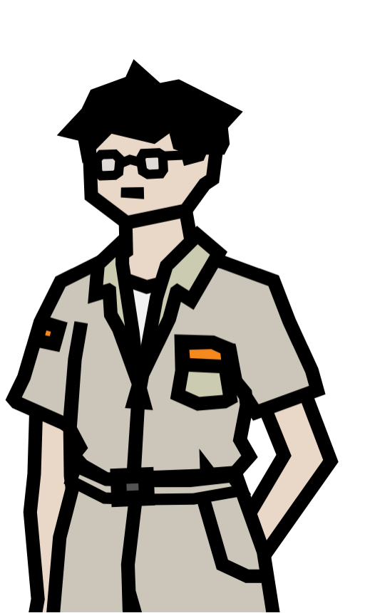<span style="display:none">images/kosuke.png<br>を置くと表示</span></div>
  <p>2026-07-07 キャラ画像確定。<b>黒縁眼鏡、癖のある黒髪、カーキの作業シャツ</b>(胸ポケットにオレンジのタグ=記録用のペン/ノート類)。片手をポケットに入れた低温の立ち姿。インドア派・記録の人が滲む造形。</p>
  <div style="clear:both"></div>`},
 {id:'ko-core', h:'確定事項', s:'k', b:`
  <ul><li>プレイヤー同様、途中から参加した<b>新参</b>。チームを組んだ張本人。</li>
  <li>賢い。インドア派(現場より機械・記録を見ている)。裏設定の<b>約65%を把握</b>。全知ではない。</li>
  <li>「プライムコアは実在する。しかも金の話じゃない」と確信している。</li>
  <li>役割:自動化(組んでおけば勝手に回る頭脳系)。序盤〜中盤の解説役。</li>
  <li>テーマ:<b>知性だけでは辿り着けない領域</b>がある。終盤、現場に潜る主人公に届かない。</li></ul>`},
 {id:'ko-model', h:'モデル・口調シート', s:'k', b:`
  <ul><li><b>モデル:南波六太(宇宙兄弟)基調</b>から優しさ・ユーモア過多を削り、<b>灰原哀(名探偵コナン)の「ドライさと人間らしさの同居」</b>を足す。※灰原は女性なので口調は移植しない。質感のみ男性として翻案。</li>
  <li>冷たさの質:慰めない・励まさない・事実を言う。<b>だがその乾いた一言が結果的に一番の助けになっている</b>。行動は常に仲間のため。</li>
  <li>ユーモアは<b>自覚のない一言だけ</b>(本人は面白いと思って言っていない)。</li>
  <li>一人称「僕」。断定しない癖――「〜のはずや」「まだ確かめてへんけど」。<b>65%しか知らない者の知的誠実さ</b>を口調で表す。</li></ul>
  <h4>方言:静かな近江弁(滋賀)── 控えめ運用</h4>
  <ul><li><b>濃度は薄く</b>:標準語に軽く関西の膜がかかる程度(「ええもん買ったな」「〜やろ」「〜へん」「ほんで」)。<span class="ng">「〜やで」「〜のはずや」など語尾の連発は禁止。コテコテの大阪ノリ・ツッコミ役も禁止</span>(テンションは低いまま)。</li>
  <li><b>道具や機械への「〜してはる」</b>(京都・滋賀の語法)は、ここぞという時だけ使う切り札(例:「向こうも難儀してはるで」)。自走する道具の世界と噛み合う個性。</li>
  <li><b>呼び方:仲間は名前呼び</b>(「なえか」「げん」)。<span class="ng">きみ呼びは禁止</span>。主人公の呼び方は名前決定まで保留(呼びかけを避けて書く)。</li>
  <li>穏やかな否定「だんない(=かまへん、問題ない)」を稀に。乾いた励ましの代わりになる。</li>
  <li>物語上のボーナス:地元育ちのなえかが標準語寄り、<b>新参のコウスケだけ方言</b>という逆転が、彼の出自(どこから来たか)のフックになる。</li></ul>`},
 {id:'ko-knowledge', h:'知識境界(65%の中身・草案)', s:'t', b:`
  <table><tr><th>区分</th><th>内容</th></tr>
  <tr><td><b>知っている</b></td><td>ベクトル論の基礎/宝石=均衡=燃料/オニース=採掘の反動/評議会が宝石以外の"何か"を集めていること/コアが実在する証拠(古い採掘記録)</td></tr>
  <tr><td><b>推測どまり</b></td><td>コアの正体(「金の話じゃない、もっと妙なもの」)/評議会の真の目的/意思の物理的定義</td></tr>
  <tr><td><b>知り得ない</b></td><td>失われた一本/内部相の再帰構造/意思の起源=継承・繁殖/主人公の署名の意味</td></tr></table>
  <p class="note">執筆ルール:コウスケは「知り得ない」欄の内容を<b>決して口にできない</b>。近づいた時は「ここから先は僕の想像」で必ず区切る。</p>`},
 {id:'ko-arc', h:'物語アーク(草案)', s:'t', b:`
  <table><tr><th>時期</th><th>状態</th></tr>
  <tr><td>序盤</td><td>解説役。記録と観測で主人公の異常さに最初に気づく。</td></tr>
  <tr><td>中盤</td><td>評議会と知恵比べ。自分の知識の限界(65%)に直面し始める。</td></tr>
  <tr><td>終盤</td><td>「僕はここまでだ」――知性の限界を認め、主人公に託す。人に興味が薄かった男が、最後は人(主人公)に賭ける。</td></tr></table>`},
 {id:'ko-voice', h:'セリフ実例集(voice bank)', s:'k', b:`
  <p class="note">2026-07-07 リセット後、承認済みの団欒1から再登録。</p>
  <blockquote class="line">「ええもん買ったな」(薄い関西の膜・低温の相槌)</blockquote>
  <blockquote class="line">「……壊れてはないよ。あれは"なえかの手元を照らす"のが仕事や。なえかが布団に行ったら、そら布団まで来るやろ」(慰めず、論理で事実を言う)</blockquote>
  <blockquote class="line">「どっちかいうと、真面目すぎるんやと思う。……向こうも難儀してはるで」(道具への「はる」は切り札/無自覚ユーモア)</blockquote>
  <blockquote class="line">「……鍛冶屋やんな、なえか」(名前呼び・短い指摘)</blockquote>
  <blockquote class="line">「もう飼うてるやん、それ」(締めの一言)</blockquote>`},
]},
{id:'ch-naeka', nav:'なえか', group:'キャラクター', title:'なえか ── 鍛冶職人', desc:'チームの太陽。地上専任。理解度30%。Relic中タブ(装備/鍛冶)。', secs:[
 {id:'na-visual', h:'ビジュアル', s:'k', b:`
  <div class="imgslot">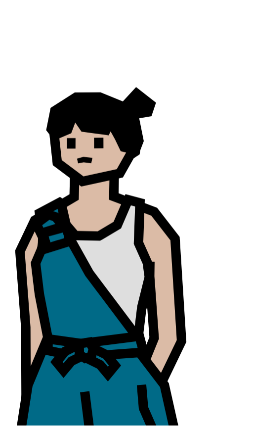<span style="display:none">images/naeka.png<br>を置くと表示</span></div>
  <p>2026-07-07 キャラ画像確定。<b>お団子髪、青緑(ティール)の作業着をたすき掛け</b>。腰帯で結んだ職人の仕事着。片手を後ろに組んだマイペースな立ち姿。</p>
  <p class="note">アートスタイル:太い黒アウトラインの角ばったフラット画(3人共通)。</p>
  <div style="clear:both"></div>`},
 {id:'na-core', h:'確定事項', s:'k', b:`
  <ul><li>この世界で生まれ育った人。父が存命(母は不問)。</li>
  <li><b>地上専任</b>:自分では掘らない・穴に入らない。持ち場は鍛冶場。「作って待つ側/潜る側」の役割分担。</li>
  <li><b>対等な仲間</b>:先輩・親方ではない。差配・評価の語法(「任せた」「行っといで」等の上から表現)は<span class="ng">禁止</span>。</li>
  <li>マイペースでちょっとドジ。難しい話は好まない。理解度約30%(一般常識レベル)。</li>
  <li>役割:道具を手をかけて育てる職人。日常の温度・地に足のついた錨。</li></ul>`},
 {id:'na-model', h:'モデル・口調シート', s:'k', b:`
  <ul><li><b>モデル:各務原なでしこ(ゆるキャン△)から、はしゃぎ成分を少しだけ抜き、玄人(職人)っぽさを少しだけ足す</b>。</li>
  <li>一人称「あたし」/主人公を「あんた」。</li>
  <li><b>抽象語禁止</b>(ベクトル・均衡・理を口にしない)。道具と食べ物と天気で喋る。</li>
  <li>ドジの方向:<b>手先は精密、日常がガサツ</b>(鍛冶は完璧、朝は寝坊・工具は散らかる)。逆にすると職人が崩れる。</li></ul>`},
 {id:'na-knowledge', h:'知識境界(30%の中身・草案)', s:'t', b:`
  <table><tr><th>区分</th><th>内容</th></tr>
  <tr><td><b>知っている</b></td><td>道具は勝手に動く(日常)/宝石は唯一消えない財産/深いほど良い宝石/オニースは危ない/道具は使い込むと"卒業"する</td></tr>
  <tr><td><b>気にしていない</b></td><td>なぜ動くのか/コアの真偽/評議会の思惑――「難しいことは知らない」</td></tr>
  <tr><td><b>知り得ない</b></td><td>ベクトル論・内部相・意思の起源・コアの正体すべて</td></tr></table>
  <p class="note">執筆ルール:なえかの台詞が真実を照らすのは<b>生活の知恵として偶然</b>のみ(例:「道具ってさ、可愛がると応えるんだよね」が生きた均衡の予告になる、等)。本人は意味に気づかない。</p>`},
 {id:'na-arc', h:'物語アーク(草案)', s:'t', b:`
  <table><tr><th>時期</th><th>状態</th></tr>
  <tr><td>序盤</td><td>主人公を迎え入れ、道具で支える。日常の象徴。</td></tr>
  <tr><td>中盤</td><td>評議会の圧力が町に及び、「帰る場所」であること自体が試される。</td></tr>
  <tr><td>終盤</td><td>底へ向かう主人公への「ちゃんと帰っておいでよ」が、静止(終焉)への最大のカウンターになる。<b>動き続ける世界=日常を体現する存在</b>。</td></tr></table>`},
 {id:'na-voice', h:'セリフ実例集(voice bank)', s:'k', b:`
  <p class="note">2026-07-07 リセット後、承認済みの団欒1から再登録。</p>
  <blockquote class="line">「あたしが炉の前に立つでしょ、ついてくんの。金床に移るでしょ、ついてくんの。そこまでは偉いのよ」(身振り再現の語り・反復)</blockquote>
  <blockquote class="line">「消えないのよ!! スイッチなんてないもん、道具だよ?」(世界の常識を生活感覚で言う)</blockquote>
  <blockquote class="line">「かけたよ。するーと入ってくんの。仕事の邪魔すんな、みたいな顔して」(道具を擬人化して受け取る職人の情)</blockquote>
  <blockquote class="line">「うっさい!! 明日作るもん! あの子専用の、いいやつ!!」(道具を「あの子」と呼ぶ)</blockquote>
  <blockquote class="line">「あたし、迎えが来たのかと思った」(オチは自虐)</blockquote>`},
 {id:'na-open', h:'未確定事項', s:'t', b:`
  <ul><li><b>父の役割</b>:表に登場させるか、世界の理のゲート役(古い採掘者としてコウスケの記録の出所?)にするか。</li></ul>`},
]},
{id:'ch-gen', nav:'げん', group:'キャラクター', title:'げん ── 現場職', desc:'最強の腕っぷし。無頓着なのに核心を口走る「隠し玉の啓示装置」。Relic右タブ(バトル)。', secs:[
 {id:'ge-visual', h:'ビジュアル', s:'k', b:`
  <div class="imgslot">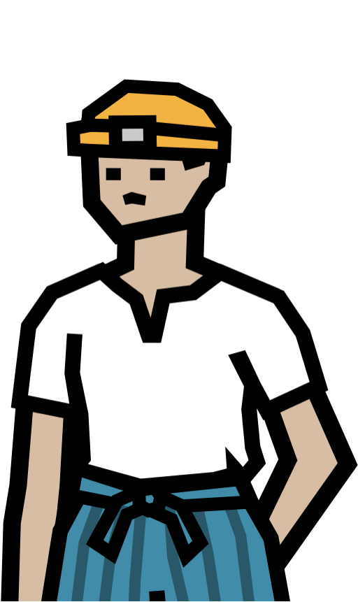<span style="display:none">images/gen.png<br>を置くと表示</span></div>
  <p>2026-07-07 キャラ画像確定。<b>ヘッドランプ付きの黄色い坑夫ヘルメット、白Tシャツ、青の縞ズボン</b>。腰に手を当てた現場の立ち姿。3人で唯一の現場装備=前線担当が一目で分かる。</p>
  <div style="clear:both"></div>`},
 {id:'ge-core', h:'確定事項', s:'k', b:`
  <ul><li>出自は不問。いつの間にか現場にいた最強の腕っぷし。行動派。</li>
  <li>口癖:「無理すんな」「やるっきゃないだろ」。</li>
  <li>世界の理には興味がない(理解度は低い)。<b>なのに時折、誰も知らないはずのことを口にして皆を凍りつかせる</b>。</li>
  <li>役割:前線の根性。重い設定のガス抜き&サプライズ。中盤の伏線担当。</li></ul>`},
 {id:'ge-model', h:'モデル・口調シート', s:'k', b:`
  <ul><li><b>モデル:ロロノア・ゾロ(ONE PIECE)</b>。求道者の要素は捨てる(鍛錬に興味はない、ただ強い)。</li>
  <li>一人称「おれ」。基本は短文(目安3語以内:「知らねえ」「食った」「行くぞ」)。抽象的な質問には即「知らねえ」。</li></ul>`},
 {id:'ge-voice', h:'セリフ実例集(voice bank)', s:'k', b:`
  <p class="note">2026-07-07 リセット後、承認済みの団欒1から再登録。</p>
  <blockquote class="line">「動くのか」「布かけろ」「作れ」「食え」(最少の言葉で会話を前へ進める)</blockquote>
  <blockquote class="line">「いいやつじゃねえか」(道具にも人にも同じ物差し。締めの温度)</blockquote>`},
 {id:'ge-oracle', h:'啓示(託宣)の演出ルール', s:'t', b:`
  <ul><li>啓示のときだけ<b>文が長く・ゆっくり・断定</b>になる。文体の落差そのものが伏線の合図。</li>
  <li>直後に<b>本人は言ったことを覚えていない</b>(イタコ型)。</li>
  <li><span class="ng">運用ルール:回収先が決まっていない啓示は出さない</span>(思わせぶりの乱発防止)。</li></ul>
  <p class="note">セリフ例は2026-07-07リセット。団欒シーンで声を合わせてから再作成。</p>`},
 {id:'ge-secret', h:'げんの秘密(なぜ知っているのか)── 候補', s:'t', b:`
  <p class="note">未確定。<b>彼の啓示セリフを書き始める前に1つ確定させる必要がある</b>(回収不能な思わせぶり防止)。</p>
  <ol><li>希薄化を免れた意思の<b>もう一つの系譜</b>(主人公と対になる存在)。</li>
  <li>かつてコアに触れた採掘者の子孫。血に記憶が残っている。</li>
  <li>実は"生きた均衡"に極めて近い存在(道具側に近い人間)。コアの揺らぎに共鳴して声を拾ってしまう。</li></ol>`},
 {id:'ge-arc', h:'物語アーク(草案)', s:'t', b:`
  <table><tr><th>時期</th><th>状態</th></tr>
  <tr><td>序盤</td><td>頼れる前線。啓示は1〜2回、誰も本気にしない。</td></tr>
  <tr><td>中盤</td><td>啓示の頻度が深度に比例して上がり、チームが「げんは何かおかしい」と直視する。</td></tr>
  <tr><td>終盤</td><td>秘密の開示。彼の正体が、主人公の正体(署名)の照明装置になる。</td></tr></table>`},
]},
{id:'ch-council', nav:'秤の評議会', group:'キャラクター', title:'秤の評議会 ── 対立勢力', desc:'宝石経済を統べる組織。意思を宝石に込めさせて回収しようとしている。', secs:[
 {id:'co-core', h:'確定事項', s:'k', b:`
  <ul><li>地上の宝石経済を統べる。「秤」=均衡(ベクトルの釣り合い)の象徴。</li>
  <li>世界中の宝石を測り、均衡を管理する。</li>
  <li><b>量産できない唯一のもの=人間の意思</b>を、宝石に込めさせて回収しようとしている。</li>
  <li>中盤(理解度45〜70%)からチームの深度に目をつけ、干渉を始める。</li></ul>`},
 {id:'co-motive', h:'組織の目的 ── 候補', s:'t', b:`
  <p class="note">未確定。中盤の敵対描写を書く前に要確定。</p>
  <ol><li><b>完成派</b>:失われた一本を復元し、世界を完成(静止)させようとする教団的組織。集めた意思で"合成の一本"を作ろうとしている。</li>
  <li><b>管理派</b>:静止も流動も望まず、均衡=現状の永続こそ正義。深く掘る者は世界を揺らすので排除する。</li>
  <li><b>元・守護者</b>:かつて「掘りすぎ」を防ぐために生まれた組織が、目的を忘れて権力化した。</li></ol>
  <p class="note">仮説α〜δの学派を内部派閥として流用可能。</p>`},
 {id:'co-face', h:'顔となるキャラクター', s:'t', b:`
  <p><span class="ng">現状ゼロ(課題)</span>。人間ドラマで語る方針なら、評議会側に最低1人の顔(回収官・監査人など、名前と口調を持つ人物)が必要。主人公たちと同格の「現場の人間」を置くと、組織対個人ではなく人対人の物語にできる。</p>`},
]},
{id:'ch-rel', nav:'関係マトリクス', group:'キャラクター', title:'関係マトリクス', desc:'呼び方と距離感。セリフ執筆時の参照用。', secs:[
 {id:'rel-matrix', h:'呼び方マトリクス(草案)', s:'t', b:`
  <table><tr><th>→を呼ぶ</th><th>主人公</th><th>コウスケ</th><th>なえか</th><th>げん</th></tr>
  <tr><th>主人公</th><td>―</td><td>(無言/選択肢)</td><td>(無言/選択肢)</td><td>(無言/選択肢)</td></tr>
  <tr><th>コウスケ</th><td>(名前決定まで保留)</td><td>―</td><td>「なえか」</td><td>「げん」</td></tr>
  <tr><th>なえか</th><td>「あんた」</td><td>「コウスケ」</td><td>―</td><td>「げん」</td></tr>
  <tr><th>げん</th><td>「あんた」/呼び捨て</td><td>「コウスケ」</td><td>「なえか」</td><td>―</td></tr></table>`},
 {id:'rel-pairs', h:'ペアごとの空気(草案)', s:'t', b:`
  <p class="note"><b>【確定】全ペア共通ルール:恋愛に発展しそうな気配はゼロにする</b>。どのペアも戦友・悪友・近所の距離感で書く。</p>
  <ul><li><b>主人公×コウスケ</b>:喋らない者同士、なぜか気が合う。沈黙が苦にならない二人。</li>
  <li><b>主人公×なえか</b>:世話を焼く/焼かれる。ただし対等(なえかは上からにならない)。</li>
  <li><b>主人公×げん</b>:言葉最少ペア。「行くぞ」「……」で成立する。</li>
  <li><b>コウスケ×なえか</b>:理屈の人と感覚の人。噛み合わないのに結論は一致しがち。</li>
  <li><b>コウスケ×げん</b>:分析対象として一番の謎(げんの啓示)。コウスケだけがげんを記録している。</li>
  <li><b>なえか×げん</b>:幼馴染的な気安さ。飯の話しかしていない。</li></ul>`},
]},
/* ============================ SCRIPT ============================ */
{id:'sc-open', nav:'冒頭会話', group:'脚本', title:'冒頭会話(起動直後)', desc:'なえか×主人公。ゲーム開始直後の掴み。本文は未確定。', secs:[
 {id:'op-rules', h:'執筆制約(確定)', s:'k', b:`
  <ul><li>プレイヤーの返答は「……」「はい/いいえ」+ごく短い一言(最大12文字程度)。</li>
  <li>なえかは<b>対等な仲間</b>として喋る(上から語法禁止)。<b>地上専任</b>(自分は掘らない)。</li>
  <li>コウスケへの受け流しを1つ入れる(名前の播種+「あたしは道具の係」)。</li>
  <li><span class="ng">伏線はさりげなく。「下が呼んでる」「坑が待ってる」のようなあからさまな擬人化はNG</span>。日常のあるある・伝聞・観察談に偽装する。</li></ul>`},
 {id:'op-main', h:'本文', s:null, b:`
  <p class="note">2026-07-07 <b>リセット</b>(コメント指示:セリフは繊細なため全キャラ共通で一旦白紙)。<br>
  構成方針(案A「拾われた朝」軸・コウスケ受け流し・ピッケル自走演出)は維持。<b>キャラの声を「団欒シーン」で固めてから再執筆</b>する。</p>`},
 {id:'op-rejected', h:'没案アーカイブ(部分採用の記録)', s:null, b:`
  <ul><li><b>案B「道具が先に目を覚ます」</b>:ピッケルが冒頭を主導する神秘系。→「コウスケに聞いて」の受け流しと、ピッケル自走演出を案Aに部分採用。</li>
  <li><b>案C「なんで、掘るの?」</b>:問いで開幕しテーマを種まき。→ 現時点では不採用(冒頭には重い)。中盤の会話に転用候補。</li>
  <li>没表現の記録:「下が呼んでる」「坑(あな)が待ってる」→ <span class="ng">あからさま/擬人化がうさん臭い</span>ため廃棄。</li></ul>`},
]},
{id:'sc-danran', nav:'団欒シーン(声合わせ)', group:'脚本', title:'団欒シーン ── 4人の声を合わせる', desc:'セリフ全リセット後の再出発点。日常の団欒で各キャラの声を確定させ、合格した言い回しをvoice bankへ戻す。', secs:[
 {id:'dan-purpose', h:'このシーンの目的', s:'k', b:`
  <ul><li>2026-07-07のコメント指示により、全キャラのセリフサンプルをリセット。<b>このシーンで声を合わせ直す</b>。</li>
  <li>物語的な機能は持たせない(伏線・啓示・テーマ語りは禁止)。<b>純粋な日常の温度だけ</b>で4人を喋らせる。</li>
  <li>OKが出た言い回しを、各キャラのvoice bankへ登録していく。</li>
  <li><b>【確定】恋愛の気配はゼロにする</b>(全キャラ・全シーン)。チームは戦友・悪友の空気。二人きりの回でも、しんみりした流れは即オチ(消去法・ケチ・騒音謝罪など)で湿度を消す。</li></ul>
  <h4>生活リズム設定(提案)── 「なぜ集まっているか」の土台</h4>
  <ul><li>4人は<b>朝と晩、なえかの工房隣の食堂で一緒に食事をとるのが習慣</b>(潜行前後の段取り共有を兼ねる)。団欒シーンの基本舞台はこの食卓。</li>
  <li><b>電話が普及している</b>。2人だけの会話回は電話で作れる。<span class="ng">※電話の世界観的裏付け(何で動いているか)は未定</span>――要検討として課題に登録。</li></ul>`},
 {id:'dan-scene', h:'団欒1「スタンドライトのやらかし」(確定)', s:'k', b:`
  <p class="note">場面:仕事終わりの夜。なえかの工房の隣、いつもの食堂。鍋を囲む4人。2026-07-07 承認済み。</p>
  <blockquote class="line">
  <b>なえか</b>「聞いてよ。昨日スタンドライト買ったんだけどさあ」<br>
  <b>コウスケ</b>「うん」<i>(記録帳から顔を上げない)</i><br>
  <b>なえか</b>「夜なべ用に、ちょっと奮発したの。自分で動いて、手元をずーっと照らしてくれるってやつ」<br>
  <b>げん</b>「動くのか」<br>
  <b>なえか</b>「動くの。……動きすぎんの」<br>
  <b>主人公</b>▷『……?』/▷『どう動いた』<br>
  <b>なえか</b>「あたしが炉の前に立つでしょ、ついてくんの。金床に移るでしょ、ついてくんの。そこまでは偉いのよ。いい買い物したなーって」<br>
  <b>コウスケ</b>「ええもん買ったな」<br>
  <b>なえか</b>「で、寝るでしょ」<br>
  <b>げん</b>「……」<i>(嫌な予感で箸が止まる)</i><br>
  <b>なえか</b>「ついてくんの!! 布団まで! 顔の真上! 煌々と!」<br>
  <b>主人公</b>▷『消せば?』/▷『……眩しい』<br>
  <b>なえか</b>「消えないのよ!! スイッチなんてないもん、道具だよ?」<br>
  <b>げん</b>「布かけろ」<br>
  <b>なえか</b>「かけたよ。するーと入ってくんの。仕事の邪魔すんな、みたいな顔して」<br>
  <b>コウスケ</b>「……壊れてはないよ。あれは"なえかの手元を照らす"のが仕事や。なえかが布団に行ったら、そら布団まで来るやろ」<br>
  <b>なえか</b>「あたしのせいってこと!?」<br>
  <b>コウスケ</b>「どっちかいうと、真面目すぎるんやと思う。……向こうも難儀してはるで」<i>(本人は面白いことを言ったつもりがない)</i><br>
  <b>主人公</b>▷『止め方は?』/▷『……』<br>
  <b>コウスケ</b>「道具は、仕舞うたら休む。寝る前に箱に入れたら、それでしまいや」<br>
  <b>なえか</b>「その箱がさあ!! 別売りなの! 本体より高いの!! 信じられる!?」<br>
  <b>げん</b>「作れ」<br>
  <b>なえか</b>「…………あ」<br>
  <b>コウスケ</b>「……鍛冶屋やんな、なえか」<br>
  <b>なえか</b>「うっさい!! 明日作るもん! あの子専用の、いいやつ!!」<br>
  <b>げん</b>「食え」<i>(鍋を顎で指す)</i><br>
  <b>なえか</b>「……うん、食べる」<br>
  <i>(しばらく、鍋の音だけ)</i><br>
  <b>なえか</b>「……箱にさ、名前彫ろっかな」<br>
  <b>コウスケ</b>「もう飼うてるやん、それ」<br>
  <b>げん</b>「いいやつじゃねえか」
  </blockquote>`},
 {id:'dan-scene2', h:'団欒2「金床の引っ越し」(第2稿)', s:'t', b:`
  <p class="note">場面:朝、いつもの食堂。<b>4人で朝メシを食べるのが習慣</b>(潜行前の段取り共有を兼ねる)。主人公・コウスケ・げんは先に食べ始めている。そこへ、工房に寄ってきたなえかが遅れて突入する――集まっている理由と乱入の動線を食事の習慣で自然化した第2稿。</p>
  <blockquote class="line">
  <i>(朝の食堂。三人は先に食べている。扉が勢いよく開く)</i><br>
  <b>なえか</b>「ちょっと!! 誰!? うちの金床動かしたの!!」<br>
  <b>コウスケ</b>「おはよ。……僕は無理やで。あれ、四百キロある」<br>
  <b>主人公</b>▷『げん?』/▷『……』<br>
  <b>げん</b>「おれだ」<br>
  <b>なえか</b>「なんで!?」<br>
  <b>げん</b>「掃除した」<br>
  <b>なえか</b>「掃除!? どこにやったの!?」<br>
  <b>げん</b>「裏」<br>
  <b>なえか</b>「うらぁ!?」<br>
  <b>コウスケ</b>「まず座り。飯、冷める」<br>
  <b>なえか</b>「……いただきます。……で!! なんで人の工房、勝手に掃除してんの!?」<br>
  <b>げん</b>「昨日、研ぎに入った。散らかってた。踏んだ」<i>(足の裏を見せる)</i><br>
  <b>なえか</b>「あ、ごめん……それはあたしが悪い……」<br>
  <b>コウスケ</b>「なえかの工房、道具は完璧に並んでるのに、床が魔窟やからな」<br>
  <b>なえか</b>「うるさいな!! 床は道具じゃないもん!!」<br>
  <i>(食後。連れ立って工房の裏へ。金床が、物干しの隣にきちんと据えてある)</i><br>
  <b>コウスケ</b>「……ほんまに運んだんや。台車の跡も無い」<br>
  <b>げん</b>「重かった」<br>
  <b>なえか</b>「でしょうね!!」<br>
  <b>なえか</b>「戻して……あ、待って。……こっちの方が、光の入りがいいかも」<br>
  <b>コウスケ</b>「ほな、正解やったんちゃう」<br>
  <b>げん</b>「そうか」<i>(少し嬉しそう)</i><br>
  <b>なえか</b>「……ありがと、げん。でも次は言ってからにして!! 心臓に悪いから!!」<br>
  <b>主人公</b>▷『力持ち』/▷『……』<br>
  <b>げん</b>「まあな」
  </blockquote>
  <p class="note">試していること:集まる理由=朝食の習慣(乱入の動線も自然)/げんが工房にいた理由=「研ぎに入った」で補強/げんの「言葉は減らすほど強い」/なえかの「手先は精密・日常ガサツ」/コウスケの控えめ関西弁(「〜やで」は挨拶がわりの一回のみ)。伏線・世界観語りゼロ。</p>`},
 {id:'dan-scene3', h:'団欒3「夜の電話」(新規・2人回)', s:'t', b:`
  <p class="note">場面:夜。主人公の部屋(なえかの工房の二階)。電話が鳴る。団欒1の続き――箱の完成報告。<b>電話という媒体で「無口な主人公」が成立するか</b>の検証回。</p>
  <blockquote class="line">
  <i>(夜。電話が鳴る)</i><br>
  <b>主人公</b>▷『(出る)』<br>
  <b>なえか</b>『あ、出た! 寝てた?』<br>
  <b>主人公</b>▷『……いや』/▷『少し』<br>
  <b>なえか</b>『ごめんごめん。でも聞いて。……できたの!! 箱!!』<br>
  <b>主人公</b>▷『箱』<br>
  <b>なえか</b>『ライトの箱!! 昼間の続きやってたら止まんなくなっちゃって。蝶番も真鍮のいいやつ使ってさ、内側に布張って』<br>
  <b>なえか</b>『で、さっき入れてみたの。そしたらさ、あの子、するーって自分から入って』<br>
  <b>なえか</b>『……すーって暗くなんの。今、うちの部屋、初めてちゃんと夜なんだよ。感動しない?』<br>
  <b>主人公</b>▷『よかった』/▷『……(頷く)』<br>
  <b>なえか</b>『でしょ? ……あ、いま頷いたでしょ。電話は見えないんだよ、あんた』<br>
  <b>なえか</b>『コウスケに言ったら「ほうか」で終わりそうだし、げんは絶対もう寝てるし。……残り、あんたしかいないじゃん』<br>
  <b>主人公</b>▷『名前は?』/▷『……』<br>
  <b>なえか</b>『……ヒカリちゃん』<br>
  <b>主人公</b>▷『そのまんま』<br>
  <b>なえか</b>『いいの!! わかりやすいのが一番なの!! 道具の名前はね!!』<br>
  <i>(少しの間)</i><br>
  <b>主人公</b>▷『音、聞こえてた』/▷『……』<br>
  <b>なえか</b>『え。……金槌の音!? 上まで!? ……ごめん!! 明日から気をつけます!!』<br>
  <b>なえか</b>『……ん、じゃ、そろそろ切るね。おやすみ! 明日もよろしく!』<br>
  <i>(電話が切れる。部屋の隅で、ピッケルが、こと、と小さく鳴る)</i><br>
  <b>主人公</b>▷『……おやすみ』/▷『……』
  </blockquote>
  <p class="note">試していること:電話越しの無口(「いま頷いたでしょ」で沈黙を可視化)/なえかの独走語り/コウスケ・げんの不在の立て方(「ほうか」で終わりそう=キャラの共有認識)。<b>恋愛の気配ゼロ運用</b>:かけた理由は消去法(「残り、あんたしかいない」)、しんみりしかけたら騒音謝罪で即オチ化。締めは「明日もよろしく」のニュートラルな仲間の挨拶。</p>`},
 {id:'dan-scene4', h:'団欒4「壁打ち」(新規・電話・主人公×コウスケ)', s:'t', b:`
  <p class="note">場面:夜。電話が鳴る。コウスケからの2人回。<b>「喋らない者同士、なぜか気が合う」</b>ペアの検証――コウスケは無口な主人公を、考えを整理する壁打ち相手として使う。</p>
  <blockquote class="line">
  <i>(夜。電話が鳴る)</i><br>
  <b>主人公</b>▷『(出る)』<br>
  <b>コウスケ</b>『あ、僕。いま平気?』<br>
  <b>主人公</b>▷『……うん』/▷『少しなら』<br>
  <b>コウスケ</b>『考えの整理がしたいから、聞いててくれるか。返事は要らん』<br>
  <b>主人公</b>▷『……』<br>
  <b>コウスケ</b>『仕分け機の話やけど。銅と石くずが、たまに逆の箱に入る。十回に一回くらい。……重さで分けてるから、濡れた石くずが銅の重さになるんやと思ってた』<br>
  <b>コウスケ</b>『けど今日は一日晴れてた。なのに二回間違えた。……ということは、重さやない』<br>
  <i>(沈黙。主人公は待つ。電話の向こうで紙をめくる音)</i><br>
  <b>コウスケ</b>『大きさ……いや、それなら最初から間違え続けるはずやし……』<br>
  <i>(長い沈黙。どちらも何も言わない。気まずさはない)</i><br>
  <b>コウスケ</b>『…………あ』<br>
  <b>コウスケ</b>『わかった。機械やない、<b>箱</b>や。箱の置き場所が、朝と昼でずれてる。……なえかが掃除のときに動かしてるんや』<br>
  <b>主人公</b>▷『何もしてない』/▷『……』<br>
  <b>コウスケ</b>『いや、おってくれた。それでええねん。……助かった、おおきに』<br>
  <b>コウスケ</b>『ほな。……あ、このこと、なえかには言わんとって。箱は僕が黙って戻しとくから』<br>
  <b>主人公</b>▷『なんで?』<br>
  <b>コウスケ</b>『言うたら気にするやろ、あの人。掃除やめてまう。……工房の床、あれでもマシになったんやで』<br>
  <i>(電話が切れる)</i>
  </blockquote>
  <p class="note">試していること:沈黙が気まずくない2人(長い無言を脚本上の「間」として堂々と置く)/コウスケの壁打ち癖(自分で答えに辿り着く)/<b>ドライさの奥の人間らしさ</b>(なえかに黙って箱を戻す=灰原質感の見せ場)。関西弁は控えめ運用の範囲。</p>`},
 {id:'dan-scene5', h:'団欒5「三回かかってくる」(新規・電話・主人公×げん)', s:'t', b:`
  <p class="note">場面:夜。電話が鳴る。げんからの2人回。<b>言葉最少ペア</b>の検証――電話という「声しかない媒体」で、げんの寡黙がどこまで通じるか。</p>
  <blockquote class="line">
  <i>(夜。電話が鳴る)</i><br>
  <b>主人公</b>▷『(出る)』<br>
  <b>げん</b>『おれだ』<br>
  <b>主人公</b>▷『げん』/▷『……』<br>
  <b>げん</b>『明日、雨だ』<br>
  <b>主人公</b>▷『……うん』<br>
  <b>げん</b>『以上』<br>
  <i>(切れる。……数分後、また鳴る)</i><br>
  <b>げん</b>『おれだ。……長靴、いるぞ』<br>
  <b>主人公</b>▷『持ってない』/▷『わかった』<br>
  <b>げん</b>『……』<br>
  <i>(切れる。……また鳴る)</i><br>
  <b>げん</b>『おれだ。足のサイズは』<br>
  <b>主人公</b>▷『……普通』/▷『……』<br>
  <b>げん</b>『わかった』<br>
  <i>(切れる)</i><br>
  <i>(翌朝。部屋のドアの前に、長靴がきちんと揃えて置いてある。――ぴったりだった)</i>
  </blockquote>
  <p class="note">試していること:通話3回・げんの総発話20文字未満という極端な構成が成立するか/<b>情は言葉ではなく物で示す</b>(長靴)/「……普通」で「わかった」になる謎の解像度(げんの人を見る目)。恋愛の気配ゼロはこのペアの構造上も担保される。</p>`},
 {id:'dan-notes', h:'声の設計メモ(このシーンで試していること)', s:'t', b:`
  <ul><li><b>なえか</b>:出来事を身振りで再現する語り口(「〜でしょ、ついてくんの」の反復)。オチは自虐。道具を「あの子」と呼ぶ職人の情。抽象語ゼロ。</li>
  <li><b>コウスケ</b>:相槌が薄い(「うん」)が、聞いてはいる。慰めず事実を言う。無自覚ユーモア(「向こうも難儀してはるで」)。<b>関西弁は控えめ</b>:標準語に薄く膜がかかる程度(「ええもん買ったな」「〜やろ」)。「はる」は道具に対してここぞでだけ。<b>仲間は名前呼び</b>(きみ呼び禁止)。</li>
  <li><b>新規の生活設定(このシーンで提案)</b>:道具に<b>スイッチは無い</b>/道具は<b>仕舞うと休む</b>/専用の箱・覆いは<b>別売り商法</b>。→「電源切れば?」というプレイヤーの疑問を世界観ギャグで回収。世界観ページにも登録済み。</li>
  <li><b>げん</b>:全発話5語以内(「動くのか」「売れ」「なら慣れろ」「食え」「いいやつじゃねえか」)。会話への参加は最少、でも団欒の中心にいる。啓示は出さない(回収先未定のため)。</li>
  <li><b>主人公</b>:選択肢は最大6文字。『うちに置く?』のような<b>短いのに優しさが出る一言</b>が個性の置き場。</li>
  <li>世界の空気:道具が勝手に動くことが<b>笑い話として日常に溶けている</b>(誰も不思議がらない)。テーマへの接続はしない。</li></ul>`},
]},
{id:'sc-mock', nav:'会話モック(スマホUI)', group:'脚本', title:'チュートリアル会話 ── スマホUIモック', desc:'ID01〜11の会話本文と、実機イメージ確認用のインタラクティブモック。担当キャラの声ルール(詳細シート)準拠。', secs:[
 {id:'mock-viewer', h:'会話モック(タップで送り)', s:'t', b:dlgViewerHtml()},
 ...DLGS.map(d=>({id:'mock-'+d.id.toLowerCase(), h:'脚本 '+d.title, s:'t', b:dlgScriptHtml(d)})),
]},
{id:'sc-flavor', nav:'宝石フレーバー', group:'脚本', title:'宝石フレーバーテキスト', desc:'主人公(プレイヤー)の主観――感想・実感・聞きかじりを一人称で。', secs:[
 {id:'fl-policy', h:'執筆方針', s:'k', b:`
  <ul><li>フレーバーテキストは<b>主人公が抱いた感想や知識を投影する</b>(客観的な設定解説にしない)。</li>
  <li>世界設定は"聞きかじった知識"や"ふとした気づき"として滲ませる。</li>
  <li>深層の宝石ほど、コアの真実に近づく心の動き(伏線)を混ぜる。</li></ul>
  <p class="note"><b>主人公は性別不詳(確定)のため、一人称は書かない</b>。主語を省いた文体で統一し、性別を匂わせる語尾も避ける。</p>`},
 {id:'fl-basic', h:'基本系統(案)', s:'t', b:`
  <p><b>クォーツ</b> ── またこいつか。いちばん最初に覚えた手応え。澄んでて、何も言ってこなくて、だから逆に落ち着く。こいつを割る音で、今日も一日が始まる。</p>
  <p><b>ダイヤモンド</b> ── 深く潜るほど、石は静かになる。これは静かすぎる。手の中で何の気配もしない――まるで、世界がここで一度終わっているみたいだ。</p>
  <p><b>サファイア</b> ── 青いのに、冷たく感じない。むしろ深い。同じ鉱脈から赤も黄も出るのに、こいつだけこの色だ。中の"組み方"が違うらしい、と古い採掘者が言っていた。</p>
  <p><b>ルビー</b> ── サファイアと骨は同じだと知ったとき、少し笑ってしまった。完璧になり損ねた青が、赤になる。欠けたほうが綺麗だなんて、誰が決めたんだ。</p>
  <p><b>エメラルド</b> ── 中に細かい傷がいくつも走っている。なのに割れない。傷を抱えたまま、ぎりぎりで保っている。……他人事に思えなくて、つい長く眺めてしまった。</p>
  <p><b>アメジスト</b> ── 角度を変えると濃さが揺れる。決めきれてないんだ、こいつ。二つの何かがまだ睨み合ってる。</p>
  <p><b>オパール</b> ── 手の中で色が動く。固まりきっていない。"まだ生きてる"みたいだ、と思ってぞっとした。宝石が生きてるわけがない。……たぶん。</p>`},
 {id:'fl-optical', h:'光学現象系(案)── 内部相が"動いている"石', s:'t', b:`
  <p><b>スター系</b> ── 表面を星が一本、すうっと滑る。整列しきれなかった名残だと聞いた。止まりきれずに、同じところを回り続けている。見ていると、自分のことみたいで嫌になる。</p>
  <p><b>キャッツアイ系</b> ── 光の筋が、瞳みたいにこっちを追ってくる。最後の一本だけ、流れを止められなかったんだそうだ。"あと一本"。最近、その言葉がやけに引っかかる。</p>
  <p><b>カラーチェンジ系</b> ── 灯りを変えると、色まで変わる。……選んでいるのは、石のほうなのか、こっちなのか。</p>
  <p><b>ファントムクォーツ</b> ── 結晶の中に、昔の自分の輪郭が幽霊みたいに残っている。石が"覚えている"。気味が悪いのに、目が離せない。</p>`},
 {id:'fl-rare', h:'希少・極致系(案)', s:'t', b:`
  <p><b>ブラック系(ダイヤ/サファイア/オパール)</b> ── 光を一切返さない。完璧すぎて、もう"無"にしか見えない。これが完成形だっていうなら、完成なんてしたくないな。</p>
  <p><b>レッドダイヤモンド</b> ── あり得ない、と手が震えた。完全に静かなはずのダイヤに、たった一筋、赤が差している。……探しているのは、これなのかもしれない。理由はまだ言えないけど。</p>
  <p><b>蛍光ダイヤモンド</b> ── 暗がりで、ひとりでにぼんやり光っていた。死んでいるはずの石が、エネルギーを返している。"生きた均衡"なんて与太話だと思っていた。昨日までは。</p>
  <p class="note">残りの色変種(イエロー/グリーン/オレンジ各種など約40種)は方向性確定後に量産する。</p>`},
]},
/* ============================ LORE ============================ */
{id:'lo-onees', nav:'オニース(敵)', group:'システム象徴', title:'オニース ── 敵の象徴', desc:'採掘の反動として生まれる「死んだベクトルの塊」。', secs:[
 {id:'on-core', h:'確定事項', s:'k', b:`
  <ul><li>オニース=採掘で砕かれた均衡から解放されたベクトルが、行き場を失い各次元に凝集した<b>死んだベクトルの塊</b>。</li>
  <li>2系統の違いは「在る次元」だけ:<b>石オニース</b>(ストーン次元)/<b>幽霊オニース</b>(スピリット次元)。中身は同じ。</li>
  <li><b>次元と意思は直交する別の軸</b>。幽霊は意思を持った存在では断じてない。Spirit(霊力)=攻撃をスピリット次元へ届かせる量(命中)。</li>
  <li>プレイヤーの採掘そのものが敵を生む(敵の強さはCaveのStratum/depthに連動)。</li></ul>`},
 {id:'on-idea', h:'強化アイデア:「意思なき運動」の対比', s:'t', b:`
  <p>オニースも自走道具も、同じ<b>「意思なき運動」</b>である。片方は飼い慣らされ(道具)、片方は野放し(敵)。この対比を資料・ゲーム内テキストで明文化すると、敵の存在が世界の理の裏返しとして強くなる。</p>`},
 {id:'on-issue', h:'課題:発生因果の穴', s:'t', b:`
  <p>資料上「均衡(宝石)を砕くと」とあるが、プレイヤーが砕くのは<b>岩</b>で、宝石は無傷で回収する。<span class="ng">何を砕いたベクトルがオニースになるのか</span>を質量変換チェーンに厳密に位置づけ直す必要がある(例:岩=粗い均衡の集合。変換しきれない解放ベクトルの余りが凝集する)。</p>`},
]},
{id:'lo-prestige', nav:'プレステージ', group:'システム象徴', title:'プレステージ ── 生きた均衡の創造', desc:'成長(不均衡)を宝石(均衡)で固定=永続化する行為。', secs:[
 {id:'pr-core', h:'確定事項', s:'k', b:`
  <ul><li>大原則:<b>不均衡なベクトルは流れて消える。均衡だけが凍って残る</b>。</li>
  <li>アイテムの成長=不均衡・動的な変化。放置すれば消える → だからリセットが起きる(罰ではなく物理法則)。</li>
  <li>プレステージ=宝石の均衡を借りて成長を固定する「卒業」。</li>
  <li>完成品は死んだ均衡でも消える不均衡でもない<b>"生きた均衡"</b>=意思の萌芽を持つ。<b>プライムコアのミニチュア</b>であり本筋テーマの伏線。</li></ul>`},
 {id:'pr-issue', h:'課題', s:'t', b:`
  <ul><li><b>ティア(Tear/涙)の物理的定義が親資料に無い</b>(参照切れ)。名前の意味(純度の滴/喪失の結晶/コアの嘆き)も未定。</li>
  <li>「意思を宝石に込める」メカニズム未定義 → <b>プレステージこそが評議会の言う"込める"技術</b>、と接続する案(未確定)。</li></ul>`},
]},
/* ============================ IMPL: TUTORIAL ============================ */
{id:'impl-tutorial', nav:'チュートリアル×ストーリー', group:'実装', title:'チュートリアル × ストーリー実装計画', desc:'手書き絵コンテ(2026-07-07)とTutorialDomain.csを照合した、ストーリー挿入の実装計画。', secs:[
 {id:'tut-overview', h:'方針', s:'k', b:`
  <ul><li>既存のチュートリアル(WelcomeTutorial)の<b>説明ポップアップ・操作誘導はそのまま</b>使う(絵コンテの「そのまま」指定)。</li>
  <li>その上に<b>キャラ会話(立ち絵+吹き出し)を新レイヤーとして差し込む</b>。会話は全11本(ID01〜11)。</li>
  <li>担当はほぼ<b>なえか</b>(チュートリアルの案内人=チームの太陽)。バトルで<b>げん</b>、プレステージで<b>コウスケ</b>が初登場する構成――3人の役割(鍛冶/前線/頭脳)と一致。</li>
  <li>会話テキストは絵コンテでは<b>すべて仮</b>。団欒シーンで確定した声(voice bank)に従って清書する。</li></ul>`},
 {id:'tut-flow', h:'ストーリー会話一覧(ID01〜11)', s:'t', b:`
  <table><tr><th>ID</th><th>題</th><th>担当</th><th>挿入タイミング</th><th>仮テキスト(絵コンテ)</th><th>メモ</th></tr>
  <tr><td>01</td><td>このゲームの導入</td><td>―(地の文)</td><td>起動直後・黒画面</td><td>「この物語はきっと深くて、希少で、まるでレア鉱石みたい」</td><td><b>文言は最後に考える</b>(絵コンテ指定)</td></tr>
  <tr><td>02</td><td>話のはじまり</td><td>なえか</td><td>Cave表示直後〜最初のアイテム取得(step1000)</td><td>「ブルーダイヤモンドはこのあたりでとれるって<b>ゲン</b>が言ってた」「そう、ここ ここ」</td><td>「掘ろう!」と「ブルーダイヤをとれ」を入れる。わるだくみっぽさ?/げんの情報が発端=キャラ播種</td></tr>
  <tr><td>03</td><td>掘ってみよう</td><td>なえか</td><td>装備誘導の前(step2000前)</td><td>「持ってるitem使ってみ?」</td><td>短く。Equip説明〜装備(2000〜4000)は<b>そのまま</b></td></tr>
  <tr><td>04</td><td>自動で働くアイテム</td><td>なえか</td><td>装備後Caveに戻った時(step5000)</td><td>「すげー勝手に動いてら」</td><td>自動で動くことをいい感じに受け入れられる言葉。雑も良い。Upgrade説明(6000〜7000)は<b>そのまま</b></td></tr>
  <tr><td>05</td><td>3-1を目指しましょう</td><td>なえか</td><td>アップグレード/マージ習得後(step16200後)</td><td>「こりゃ深くまでいけますわ。とりま3-1まで」</td><td>レベル上げの後の会話。短かめ。Merge/Attach説明(8000〜16200)は<b>そのまま</b></td></tr>
  <tr><td>06</td><td>3-1おめでとう</td><td>なえか</td><td><b>3-1到達時(新規イベント)</b></td><td>「やりぃぃぃ!」</td><td>到達検知イベントが現状無い→要実装</td></tr>
  <tr><td>07</td><td>バトルの説明</td><td><b>げん</b>(なえか)</td><td>バトル解放時(step16500〜18000)</td><td>「でやがった。youのその力でたのんだ」</td><td>炭鉱でオニースを倒す必要の説明。<b>げん初登場</b>。げんが担当だがなえかとの会話もアリ。バトル画面は<b>そのまま</b></td></tr>
  <tr><td>08</td><td>次の目標</td><td>なえか</td><td>バトル報酬説明後(step20000前後)</td><td>「ほんじゃ7-1まで」</td><td>7-1が目標だと言う</td></tr>
  <tr><td>09</td><td>ほめる</td><td>なえか</td><td><b>7-1到達時(新規イベント)</b></td><td>「あっという間だね」</td><td>7-1おめでとう</td></tr>
  <tr><td>10</td><td>次の目標(プレステージ導入)</td><td><b>コウスケ</b>(げん)</td><td>プレステージ解放(step20100〜21000)</td><td>「ついにここまで。ここからが本番」</td><td>重要さをうったえる。<b>コウスケ初登場</b>。げんが出てもいい。Prestige説明は<b>そのまま</b></td></tr>
  <tr><td>11</td><td>タイトル</td><td>なえか</td><td>初プレステージ後(step21000後)、タイトル演出「Idle Minertia」表示→</td><td>「うちの店もよってね」</td><td>タイトルロゴを見せてから、市場(ショップ)に誘導。<b>現在step22000のCave_TITLEはコメントアウト中→復活が必要</b></td></tr></table>`},
 {id:'tut-map', h:'実装ステップ対応表(TutorialDomain.cs)', s:'t', b:`
  <p class="note">WelcomeTutorialの既存ステップ(NavigationTutorialStep)と、会話の挿入点。既存stepは変更せず、<b>会話は既存stepの間に割り込むイベント</b>として実装する。</p>
  <table><tr><th>既存step</th><th>内容(既存)</th><th>挿入する会話</th></tr>
  <tr><td>(起動直後)</td><td>―</td><td><b>ID01</b> 黒画面イントロ → <b>ID02</b> なえか</td></tr>
  <tr><td>1000</td><td>OnGetFirstItem(最初のアイテム)</td><td>取得後に<b>ID03</b></td></tr>
  <tr><td>2000〜4000</td><td>Equipment誘導・EquipExplain・装備</td><td>(そのまま)</td></tr>
  <tr><td>5000</td><td>CaveOpen(Caveに戻る)</td><td><b>ID04</b>「すげー勝手に動いてら」</td></tr>
  <tr><td>6000〜7000</td><td>UpgradeExplain・アップグレード</td><td>(そのまま)</td></tr>
  <tr><td>8000〜16200</td><td>SoilBox・5個作成・Merge・Enchant</td><td>(そのまま)。16200完了後に<b>ID05</b></td></tr>
  <tr><td>―</td><td><b>3-1到達(新規イベント)</b></td><td><b>ID06</b></td></tr>
  <tr><td>16500〜18000</td><td>BattleOpen・開始・BattleExplain</td><td>16500の前後に<b>ID07</b>(げん)</td></tr>
  <tr><td>19000〜20000</td><td>Cave誘導・BattleRewardExplain</td><td>20000完了後に<b>ID08</b></td></tr>
  <tr><td>―</td><td><b>7-1到達(新規イベント)</b></td><td><b>ID09</b></td></tr>
  <tr><td>20100〜21000</td><td>PrestigeOpen・PrestigeExplain・初プレステージ</td><td>20100の前後に<b>ID10</b>(コウスケ)</td></tr>
  <tr><td>22000(現在コメントアウト)</td><td>Cave_TITLE</td><td>復活させて<b>タイトル演出+ID11</b></td></tr>
  <tr><td>23000〜24000</td><td>Battle_E2B・E2BExplain</td><td>(そのまま)</td></tr></table>`},
 {id:'tut-new', h:'新規実装が必要なもの', s:'t', b:`
  <ol><li><b>会話UI</b>:キャラ立ち絵(画面隅)+吹き出し+タップ送り。主人公の選択肢(最大12文字)を出せる形式。既存のTutorialPopUpViewModel(説明ポップアップ)とは別物として作る。</li>
  <li><b>会話トリガー</b>:TutorialViewModelに会話用ReactiveButton追加(例:OnStoryStep)。既存NavigationTutorialStepの間に会話ステップを差し込む。</li>
  <li><b>深度到達イベント</b>:「3-1到達」「7-1到達」の検知イベントが現状のEventForTutorialに無い→追加(ID06/ID09用)。</li>
  <li><b>ID01黒画面イントロ</b>:起動直後の演出(現状無し)。</li>
  <li><b>タイトル演出の復活</b>:step22000(Cave_TITLE)がコメントアウト中。「Idle Minertia」ロゴ表示+ID11をここに実装。</li>
  <li><b>会話データ管理</b>:ID01〜11のテキストをLocalization(Templates.csv等)に載せる想定。既読管理・スキップも要検討。</li>
  <li><b>キャラ立ち絵アセット</b>:なえか・げん・コウスケ(ビジュアル未定のため依存)。</li></ol>`},
 {id:'tut-planned', h:'チュートリアル後の継続ストーリー(計画中)', s:'t', b:`
  <p class="note">絵コンテ4ページ目「ここは計画中」より。</p>
  <ul><li><b>新エリア開放ごと</b>:なえかの会話(内容未定「ここは…」)。</li>
  <li><b>Tradeが進むごと</b>:コウスケの会話。仮)「昨日は◇をX個と…… 調査内容をまとめといた」→ 宝石情報画面へ。<b>コウスケ=記録の人、と噛み合う</b>。</li>
  <li><b>ログイン</b>:項目のみ(内容未定)。</li></ul>`},
 {id:'tut-storyboard', h:'絵コンテ原本(2026-07-07)', s:null, b:`
  <p class="note">手書き絵コンテ全10枚。クリックで拡大(ブラウザの画像表示)。</p>
  <div style="display:grid;grid-template-columns:repeat(2,1fr);gap:10px">
  <a href="images/storyboard/sb_00.jpg" target="_blank">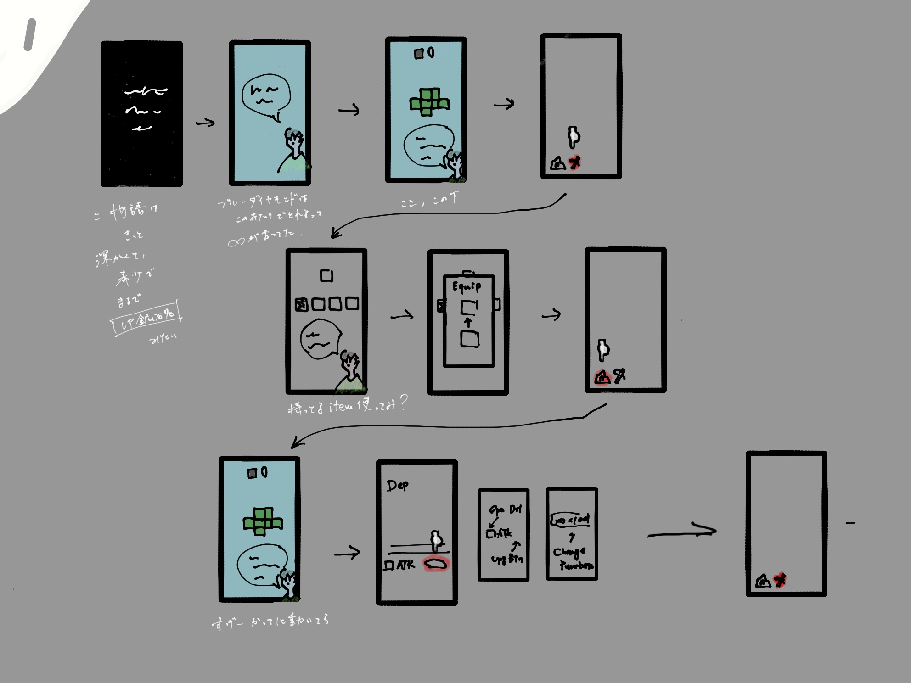</a>
  <a href="images/storyboard/sb_01.jpg" target="_blank">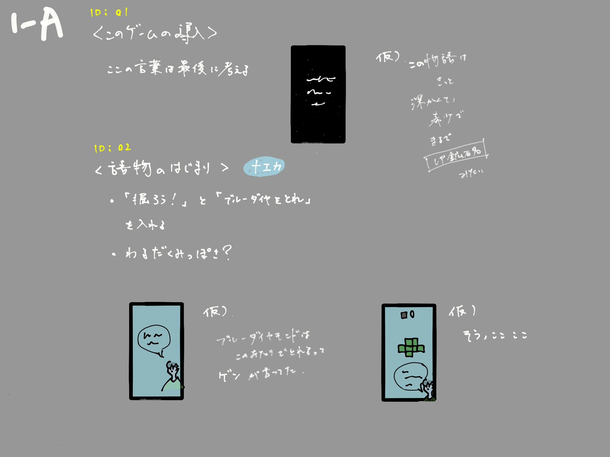</a>
  <a href="images/storyboard/sb_02.jpg" target="_blank">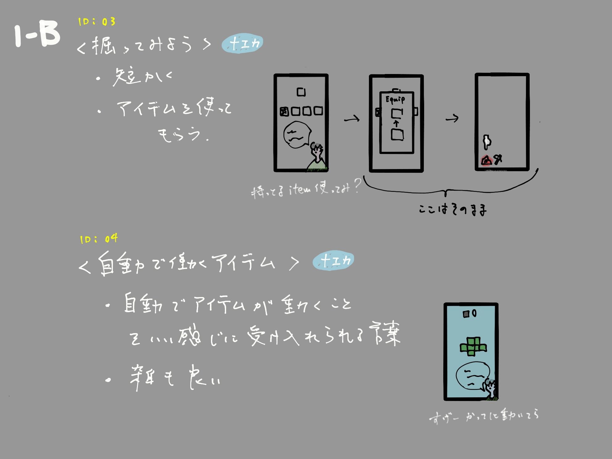</a>
  <a href="images/storyboard/sb_03.jpg" target="_blank">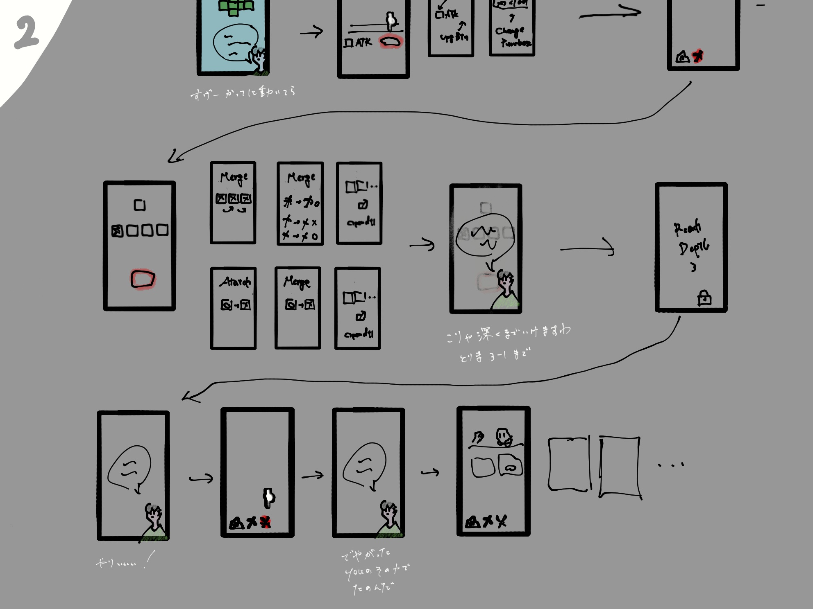</a>
  <a href="images/storyboard/sb_04.jpg" target="_blank">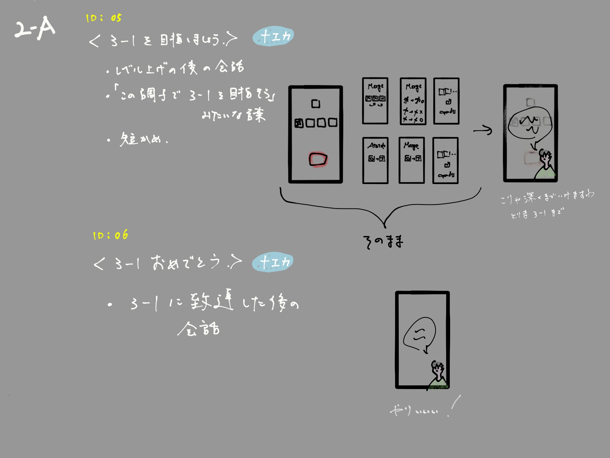</a>
  <a href="images/storyboard/sb_05.jpg" target="_blank">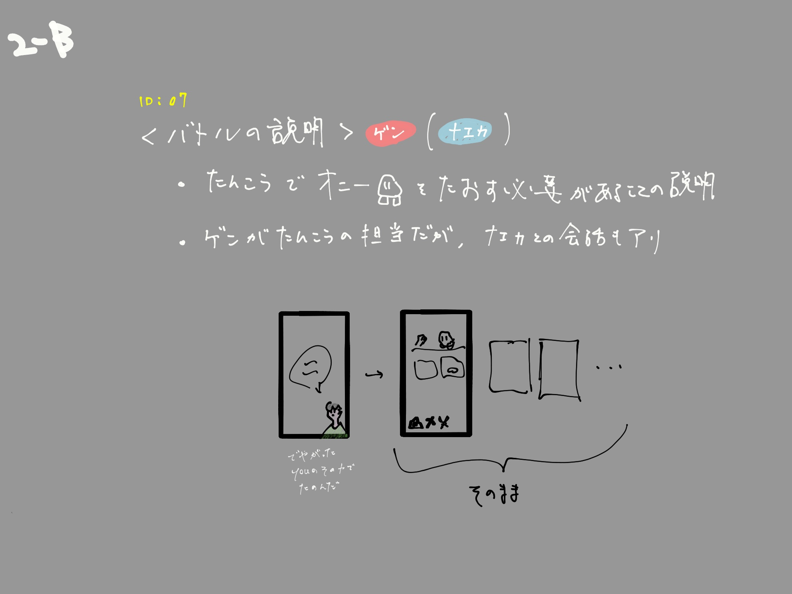</a>
  <a href="images/storyboard/sb_06.jpg" target="_blank">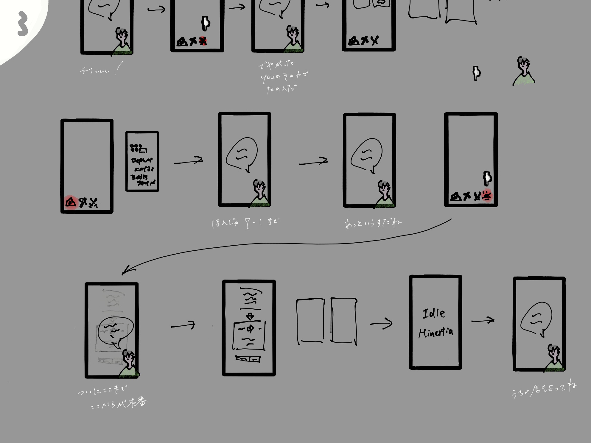</a>
  <a href="images/storyboard/sb_07.jpg" target="_blank">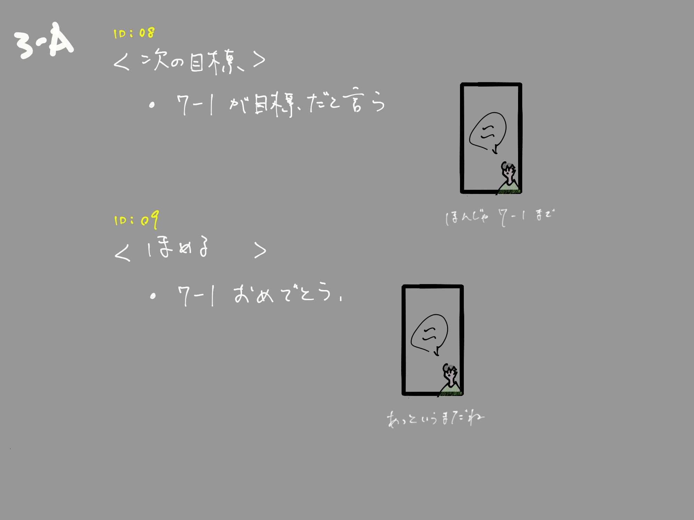</a>
  <a href="images/storyboard/sb_08.jpg" target="_blank">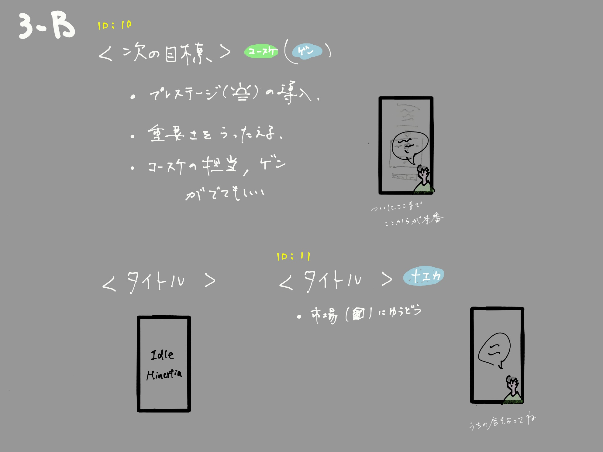</a>
  <a href="images/storyboard/sb_09.jpg" target="_blank">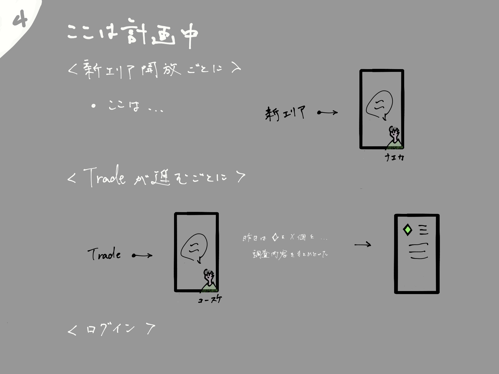</a>
  </div>`},
 {id:'tut-open', h:'検討事項', s:'t', b:`
  <ol><li><b>ID01の文言</b>:絵コンテ指定どおり「最後に考える」。導入の一文は世界観の要約になるため、全体確定後に書く。</li>
  <li><b>ID02の「わるだくみっぽさ」</b>:一攫千金の共犯感をどこまで出すか(表ストーリーのトーン決め)。</li>
  <li><b>ID07のげん初登場</b>:「でやがった。youのその力でたのんだ」は、げんの声ルール(短文)に合わせて要調整。なえかとの掛け合い構成も未定。</li>
  <li><b>「3-1」「7-1」の表記</b>:Stratum-Depth表記とゲーム内表示の整合を確認。</li>
  <li><b>会話中の主人公選択肢</b>:<b>2026-07-07確定:チュートリアルでは挟まない</b>(テンポ優先で一方向)。選択肢は本編・団欒系の会話でのみ使用。</li>
  <li><b>ID11の市場誘導</b>:「うちの店もよってね」の"店"はショップ(Shop)を指す想定。なえかの店=鍛冶屋との整合を確認(装備関連はRelicタブ)。</li></ol>`},
]},
/* ============================ ISSUES ============================ */
{id:'issues', nav:'課題・未確定一覧', group:'管理', title:'課題・未確定一覧', desc:'レビューで見つかった不整合と、決めるべきこと。優先度順。', secs:[
 {id:'is-a', h:'A. 資料間の不整合(修正必須)', s:'t', b:`
  <ol><li><b>ティアの参照切れ</b>:Prestige資料が参照する「世界観資料のティア項目」が存在しない。</li>
  <li><b>用語ゆれ</b>:「生きた/死んだベクトル」と「確定/不確定」が併存。正式用語の統一+用語集が必要。</li>
  <li><b>「次元」が親資料に無い</b>:ストーン/スピリット次元はOnees資料にしか定義がない。Worldviewに§追加すべき。</li>
  <li><b>「ミナーシャ」が3つの意味</b>:原理・惑星・町で同名。意図的な入れ子として明文化するか、名前を分けるか。</li>
  <li><b>オニース発生の因果</b>:「宝石を砕く」と「岩を砕いて宝石は拾う」の矛盾(オニースページ参照)。</li></ol>`},
 {id:'is-b', h:'B. 世界観の未定義の穴', s:'t', b:`
  <ol><li><b>喪失の原因</b>:コアから一本が失われた理由は「何らかの要因」のまま。物語最大の謎の根であり、未確定項目の最上位。</li>
  <li><b>意思と生命の時系列</b>:喪失以前に人間(生命)は存在したのか。「意思なき人類の時代」があったのか。</li>
  <li><b>「意思を宝石に込める」メカニズム</b>:評議会の行動原理の根幹が未定義(プレステージと接続する案あり)。</li>
  <li><b>評議会の目的</b>:完成派/管理派/元・守護者(評議会ページ参照)。</li>
  <li><b>ピッケリアンの正体</b>:バトルのプレイヤー側戦力とプレステージ済み"生きた均衡"道具の関係が未整理。</li>
  <li><b>電話の世界観的裏付け</b>:団欒3で電話を導入(生活に普及している前提)。何を動力に、どうやって声を運ぶのかが未定義。電気が無い世界での通信手段の理屈を要検討。</li></ol>`},
 {id:'is-c', h:'C. 表ストーリーの不足', s:'t', b:`
  <ol><li><b>キャラの視覚デザイン</b>:<s>4人とも未定</s> → <b>2026-07-07 なえか・コウスケ・げんの3人は画像確定</b>(各キャラページ参照)。残るは<b>主人公</b>(性別不詳・中性的の制約あり)。</li>
  <li><b>評議会に顔がない</b>:最低1人のキャラクターが必要。</li>
  <li><b>会話トリガー設計が無い</b>:どのゲームイベントで誰のどの会話が出るか(配信設計=脚本の設計図)。</li>
  <li><b>げんの秘密の確定</b>:啓示セリフを書く前に回収先を決める(げんページの3候補)。</li></ol>`},
]},
];

/* ---------- store ---------- */
const LS_KEY='minertia_story_feedback_v1';
const API=(location.protocol==='http:'||location.protocol==='https:')?'':'http://localhost:8137';
let SERVER=false;           // サーバー接続中なら feedback.json へ自動永続化
let READONLY=false;         // 静的配信(GitHub Pages 等)。閲覧専用
let STORE={comments:{},reactions:{}};
try{const s=localStorage.getItem(LS_KEY); if(s) STORE=JSON.parse(s);}catch(e){}
let postTimer=null;
function save(){
  if(READONLY)return;
  try{localStorage.setItem(LS_KEY,JSON.stringify(STORE));}catch(e){}
  if(SERVER){
    clearTimeout(postTimer);
    postTimer=setTimeout(()=>{
      fetch(API+'/api/feedback',{method:'POST',headers:{'Content-Type':'application/json'},body:JSON.stringify(STORE)})
        .catch(()=>{SERVER=false;renderTop();});
    },250);
  }
}
function mergeStores(local,remote){
  const out={comments:{},reactions:{}};
  const ids=new Set(Object.keys(local.comments||{}).concat(Object.keys(remote.comments||{})));
  for(const id of ids){
    const seen=new Set();const arr=[];
    const all=(remote.comments&&remote.comments[id]||[]).concat(local.comments&&local.comments[id]||[]);
    for(const c of all){const k=c.ts+'|'+c.text;if(!seen.has(k)){seen.add(k);arr.push(c);}}
    arr.sort((a,b)=>a.ts<b.ts?-1:1);
    if(arr.length)out.comments[id]=arr;
  }
  out.reactions=Object.assign({},remote.reactions||{},local.reactions||{});
  return out;
}
async function connectServer(){
  try{
    const r=await fetch(API+'/api/feedback',{cache:'no-store'});
    if(!r.ok)throw 0;
    const remote=await r.json();
    STORE=mergeStores(STORE,remote);   // 過去分(ファイル)とこのブラウザ分を統合
    SERVER=true;
    save();                             // 統合結果をファイルへ書き戻し
    return;
  }catch(e){SERVER=false;}
  // サーバーが無い場合、同じ場所に置かれた feedback.json を静的に読む。
  // GitHub Pages などの閲覧専用配信はこの経路になる。
  try{
    const r=await fetch('feedback.json',{cache:'no-store'});
    if(!r.ok)throw 0;
    const remote=await r.json();
    if(!remote||typeof remote!=='object')throw 0;
    STORE={comments:remote.comments||{},reactions:remote.reactions||{}};
    READONLY=true;                      // 書き込み導線をすべて閉じる
  }catch(e){}
}

/* ---------- state ---------- */
let curPage=location.hash?location.hash.slice(1):'home';
let filter='all';
function secTitle(id){for(const p of DB){for(const s of p.secs){if(s.id===id)return {page:p,sec:s};}}return null;}
function pageCommentCount(p){let n=0;for(const s of p.secs){n+=(STORE.comments[s.id]||[]).length;}return n;}
function totalFeedback(){let n=0;for(const k in STORE.comments)n+=STORE.comments[k].length;for(const k in STORE.reactions)if(STORE.reactions[k])n++;return n;}

/* ---------- nav ---------- */
function renderNav(){
  const nav=document.getElementById('nav');
  let html='<div class="brand"><h1>MINERTIA</h1><small>ストーリー設定レビューサイト</small></div>';
  let grp='';
  for(const p of DB){
    if(p.group!==grp){grp=p.group;html+='<div class="grp">'+grp+'</div>';}
    const c=pageCommentCount(p);
    html+='<button class="nv'+(p.id===curPage?' on':'')+'" onclick="go(\''+p.id+'\')"><span>'+p.nav+'</span>'+(c?'<span class="cnt">💬'+c+'</span>':'')+'</button>';
  }
  html+='<div class="grp">フィードバック</div>';
  html+='<button class="nv'+(curPage==='feedback'?' on':'')+'" onclick="go(\'feedback\')"><span>コメント一覧・書き出し</span>'+(totalFeedback()?'<span class="cnt">'+totalFeedback()+'</span>':'')+'</button>';
  nav.innerHTML=html;
}
function go(id){curPage=id;location.hash=id;render();window.scrollTo(0,0);}

/* ---------- top ---------- */
function renderTop(){
  const t=document.getElementById('top');
  const f=[['all','すべて'],['t','提案のみ'],['k','確定のみ'],['c','コメント付き']];
  const mode=READONLY
    ?'<span class="mode ro" title="公開版です。書き込みはローカル版(start_site.bat)で行ってください">👁 閲覧専用</span>'
    :SERVER
    ?'<span class="mode on" title="コメントは feedback.json へ自動保存されています">💾 自動保存ON</span>'
    :'<span class="mode off" title="start_site.bat を起動すると、コメントがファイルへ自動保存されます(現在はこのブラウザ内のみ)">⚠ 自動保存OFF</span>';
  t.innerHTML=f.map(x=>'<button class="flt'+(filter===x[0]?' on':'')+'" onclick="setFilter(\''+x[0]+'\')">'+x[1]+'</button>').join('')
   +mode
   +'<button class="exp" onclick="exportMD()">📋 フィードバック書き出し</button>';
}
function setFilter(f){filter=f;render();}

/* ---------- page ---------- */
function esc(s){return s.replace(/&/g,'&amp;').replace(/</g,'&lt;');}
function renderPage(){
  const el=document.getElementById('page');
  if(curPage==='feedback'){renderFeedback(el);return;}
  const p=DB.find(x=>x.id===curPage)||DB[0];
  let html='<div class="phead"><h2>'+p.title+'</h2><p>'+p.desc+'</p></div>';
  for(const s of p.secs){
    const cms=STORE.comments[s.id]||[];
    const rea=STORE.reactions[s.id]||'';
    let vis=true;
    if(filter==='t')vis=(s.s==='t');
    if(filter==='k')vis=(s.s==='k');
    if(filter==='c')vis=cms.length>0;
    const badge=s.s==='k'?'<span class="badge b-k">確定(仮)</span>':s.s==='t'?'<span class="badge b-t">提案</span>':'';
    let fz='';
    if(READONLY){
      // 閲覧専用: 記録済みの反応とコメントだけを表示し、入力導線は出さない
      if(rea||cms.length){
        fz='<div class="fzone">'
          +(rea?'<div class="rrow"><span class="note">反応: '+(rea==='ok'?'👍 OK':'✋ 要変更')+'</span></div>':'')
          +'<div class="clist">'+cms.map(c=>'<div class="citem"><div class="meta"><span>'+c.ts+'</span></div>'+esc(c.text).replace(/\n/g,'<br>')+'</div>').join('')+'</div>'
          +'</div>';
      }
    }else{
      fz='<div class="fzone">'
        +'<div class="rrow">'
        +'<button class="rbtn'+(rea==='ok'?' on-ok':'')+'" onclick="react(\''+s.id+'\',\'ok\')">👍 OK</button>'
        +'<button class="rbtn'+(rea==='ng'?' on-ng':'')+'" onclick="react(\''+s.id+'\',\'ng\')">✋ 要変更</button>'
        +'<button class="cbtn" onclick="toggleC(\''+s.id+'\')">💬 コメント ('+cms.length+')</button>'
        +'</div>'
        +'<div class="clist">'+cms.map((c,i)=>'<div class="citem"><div class="meta"><span>'+c.ts+'</span><button class="del" onclick="delC(\''+s.id+'\','+i+')">削除</button></div>'+esc(c.text).replace(/\n/g,'<br>')+'</div>').join('')+'</div>'
        +'<div class="cform" id="cf-'+s.id+'"><textarea id="ta-'+s.id+'" placeholder="このブロックへのコメント・変更指示を入力…"></textarea><br><button class="save" onclick="addC(\''+s.id+'\')">保存</button></div>'
        +'</div>';
    }
    html+='<div class="sec'+(vis?'':' hide')+'" id="sec-'+s.id+'">'
      +'<div class="shead"><h3>'+s.h+'</h3>'+badge+'</div>'
      +'<div class="sbody">'+s.b+'</div>'
      +fz+'</div>';
  }
  el.innerHTML=html;
  if(document.getElementById('dlg-phone'))dlgDraw();
}

/* ---------- feedback page ---------- */
function renderFeedback(el){
  let items=[];
  for(const p of DB){for(const s of p.secs){
    const cms=STORE.comments[s.id]||[];const rea=STORE.reactions[s.id];
    if(cms.length||rea)items.push({p,s,cms,rea});
  }}
  let html='<div class="phead"><h2>コメント一覧・書き出し</h2><p>あなたのリアクションとコメントの一覧。「書き出し」でMarkdownをコピーし、Claudeに貼り付けてください。</p></div>';
  html+='<div style="margin-bottom:16px"><button class="exp" onclick="exportMD()">📋 Markdownをクリップボードへ</button> <button class="flt" onclick="exportJSON()">JSONダウンロード</button>'
    +(READONLY?'':' <button class="flt" style="color:var(--warn)" onclick="clearAll()">全消去</button>')+'</div>';
  if(!items.length){html+='<div class="empty">まだフィードバックはありません。各ページのブロックで OK/要変更 やコメントを付けてください。</div>';}
  for(const it of items){
    html+='<div class="fb-sec"><div class="to">'+it.p.title+' › '+it.s.h+' <a href="#'+it.p.id+'" onclick="go(\''+it.p.id+'\')">→開く</a></div>';
    if(it.rea)html+='<div>反応: '+(it.rea==='ok'?'👍 OK':'✋ 要変更')+'</div>';
    for(const c of it.cms)html+='<div class="citem"><div class="meta"><span>'+c.ts+'</span></div>'+esc(c.text).replace(/\n/g,'<br>')+'</div>';
    html+='</div>';
  }
  el.innerHTML=html;
}

/* ---------- actions ---------- */
function react(id,v){if(READONLY)return;STORE.reactions[id]=(STORE.reactions[id]===v?'':v);save();render();}
function toggleC(id){if(READONLY)return;document.getElementById('cf-'+id).classList.toggle('open');}
function addC(id){
  if(READONLY)return;
  const ta=document.getElementById('ta-'+id);const txt=ta.value.trim();if(!txt)return;
  if(!STORE.comments[id])STORE.comments[id]=[];
  const d=new Date();
  const ts=d.getFullYear()+'-'+String(d.getMonth()+1).padStart(2,'0')+'-'+String(d.getDate()).padStart(2,'0')+' '+String(d.getHours()).padStart(2,'0')+':'+String(d.getMinutes()).padStart(2,'0');
  STORE.comments[id].push({text:txt,ts});save();render();
  if(SERVER){fetch(API+'/api/log',{method:'POST',headers:{'Content-Type':'application/json'},body:JSON.stringify({sec:id,text:txt,ts})}).catch(()=>{});}
}
function delC(id,i){if(READONLY)return;STORE.comments[id].splice(i,1);save();render();}
function clearAll(){if(READONLY)return;if(confirm('すべてのコメントとリアクションを消去します。よろしいですか?')){STORE={comments:{},reactions:{}};save();render();}}
function buildMD(){
  const d=new Date();
  let md='# MINERTIA ストーリーサイト フィードバック ('+d.getFullYear()+'-'+String(d.getMonth()+1).padStart(2,'0')+'-'+String(d.getDate()).padStart(2,'0')+')\n\n';
  let any=false;
  for(const p of DB){for(const s of p.secs){
    const cms=STORE.comments[s.id]||[];const rea=STORE.reactions[s.id];
    if(!cms.length&&!rea)continue;any=true;
    md+='## ['+s.id+'] '+p.title+' › '+s.h+'\n';
    if(rea)md+='- 反応: '+(rea==='ok'?'OK(承認)':'要変更')+'\n';
    for(const c of cms)md+='- コメント('+c.ts+'): '+c.text.replace(/\n/g,' / ')+'\n';
    md+='\n';
  }}
  return any?md:null;
}
function exportMD(){
  const md=buildMD();
  if(!md){alert('フィードバックがまだありません。');return;}
  navigator.clipboard.writeText(md).then(()=>alert('Markdownをコピーしました。Claudeに貼り付けてください。'),
    ()=>{prompt('コピーできない場合は手動で選択してください:',md);});
}
function exportJSON(){
  const blob=new Blob([JSON.stringify(STORE,null,2)],{type:'application/json'});
  const a=document.createElement('a');a.href=URL.createObjectURL(blob);a.download='minertia_feedback.json';a.click();
}

/* ---------- dialogue mock player ---------- */
let DLG_CUR='ID01', DLG_IDX=0;
function dlgLoad(id){DLG_CUR=id;DLG_IDX=0;dlgDraw();}
function dlgNext(){
 const d=DLGS.find(x=>x.id===DLG_CUR);if(!d)return;
 const line=d.lines[DLG_IDX];
 if(line&&line.choice)return; // 選択肢中はタップで進めない
 DLG_IDX++;
 if(DLG_IDX>d.lines.length)DLG_IDX=0; // 終了カードの次で最初へ
 dlgDraw();
}
function dlgChoice(ev){ev.stopPropagation();DLG_IDX++;dlgDraw();}
function dlgDraw(){
 const ph=document.getElementById('dlg-phone');if(!ph)return;
 const d=DLGS.find(x=>x.id===DLG_CUR);if(!d)return;
 document.querySelectorAll('.dlg-btns button').forEach(b=>b.classList.toggle('on',b.dataset.id===DLG_CUR));
 ph.style.background=d.bg||'';
 let html='<div class="dlg-cap">'+d.title+'</div>';
 if(DLG_IDX>=d.lines.length){
  ph.innerHTML=html+'<div class="dlg-narr">― おわり ―<br><span style="font-size:11px;color:#9a9385">(タップで最初から)</span></div>';return;
 }
 const line=d.lines[DLG_IDX];
 let charKey=null;
 for(let i=DLG_IDX;i>=0;i--){const l=d.lines[i];if(l.c){charKey=l.c;break;}}
 const charImg=(k,dim)=>'';
 if(line.narr){
  html+='<div class="dlg-narr">'+line.narr+'</div>';
 }else if(line.sys){
  if(charKey)html+=charImg(charKey,true);
  html+='<div class="dlg-narr" style="font-style:italic;font-size:12px;color:#c9c3b2">'+line.sys+'</div>';
 }else if(line.choice){
  if(charKey)html+=charImg(charKey,false);
  html+='<div class="dlg-choices">'+line.choice.map(o=>'<button onclick="dlgChoice(event)">'+o+'</button>').join('')+'</div>';
 }else{
  const c=DLG_CHARS[line.c];
  html+=charImg(line.c,false);
  html+='<div class="dlg-box"><span class="dlg-name" style="background:'+c.color+'">'+c.name+'</span><div class="dlg-text">'+line.t+'</div><div class="dlg-adv">▼ TAP</div></div>';
 }
 ph.innerHTML=html;
}

/* ---------- boot ---------- */
function render(){renderNav();renderTop();renderPage();}
window.addEventListener('hashchange',()=>{const h=location.hash.slice(1);if(h&&h!==curPage){curPage=h;render();}});
(async function boot(){render();await connectServer();render();})();
</script>
</body>
</html>
